pacman::p_load(tidyverse, sf, readr, ggplot2, tmap, dplyr, arrow, sfdep, scales, animation, png, magick, patchwork, Kendall, zoo, forecast)Take-home Exercise 2: Application of Geospatial Analysis Methods to Discover Thailand Drug Abuse at the Province Level
Introduction
Drug Abuse Overview
Global Impact: Drug abuse has severe health, financial, and social consequences.
Prevalence: In 2021, 1 in 17 people aged 15–64 worldwide used a drug in the past year.
Growth Trend: Drug users increased from 240 million in 2011 to 296 million in 2021.
Drug Situation in Thailand
Geopolitical Context: Proximity to the Golden Triangle, a major drug production area, makes Thailand a key market and transit route for drug trafficking.
Youth Drug Abuse:
Approximately 2.7 million young people in Thailand use drugs.
Around 300,000 youth aged 15-19 need drug treatment.
Vocational students are nearly twice as involved with drugs compared to secondary-school students.

This Geospatial Analytics will Focus on:
- Objective: Determine if drug abuse indicators in Thailand show spatial dependence.
- Analysis Goals:
Identify clusters, outliers, and hotspots of drug abuse.
Examine how these patterns change over time.
1.0 Setup
1.1 Installing R-Packages
sf:For handling spatial vector data and transforming it into simple features (
sf) objects.Functions like
st_read()for importing spatial data andst_transform()for coordinate reference system transformations.
tidyverse: For data manipulation and transformation, including functions for working withtibbledata frames.readr: For reading in CSV or other text-based data files if needed.dplyr: provide data manipulation capabilities (eg. to group and summarize the relationships between these columns)arrow: To read parquet files
tmap: For creating thematic maps and displaying KDE layers.ggplot2: For additional custom visualizations if needed.scales: Transform the unit of measurement for coordinateanimation, png, magick: For animation work
sfdep: For performing both local and global spatial autocorrelation analysis
forecast: For trend prediction
1.2 Data Acquisition
We will be using 2 sets of data:
Study Period: 2017-2022
- Source: Thailand - Subnational Administrative Boundaries at HDX.
- Province Boundaries: For understanding conflict distribution across larger administrative divisions.
1.3 Importing Geospatial Data into R
drug_offenses <- read_parquet("data/drug_offense/thai_drug_offenses_2017_2022.parquet")drug_offenses <- read_csv("data/drug_offense/thai_drug_offenses_2017_2022.csv")Rows: 7392 Columns: 5
── Column specification ────────────────────────────────────────────────────────
Delimiter: ","
chr (3): types_of_drug_offenses, province_th, province_en
dbl (2): fiscal_year, no_cases
ℹ Use `spec()` to retrieve the full column specification for this data.
ℹ Specify the column types or set `show_col_types = FALSE` to quiet this message.
Note
Since the data in CSV and Parquet formats are identical, we only need to import one of these file types.
province_boundaries <- st_read(dsn = "data/subnational_administrative_boundary", layer="tha_admbnda_adm1_rtsd_20220121")Reading layer `tha_admbnda_adm1_rtsd_20220121' from data source
`C:\Users\ngkng\Desktop\School\Geo -Local\Take-home_Ex\Take-home_Ex02\data\subnational_administrative_boundary'
using driver `ESRI Shapefile'
Simple feature collection with 77 features and 16 fields
Geometry type: MULTIPOLYGON
Dimension: XY
Bounding box: xmin: 97.34336 ymin: 5.613038 xmax: 105.637 ymax: 20.46507
Geodetic CRS: WGS 841.4 Checking Geospatial Data
class(drug_offenses)[1] "spec_tbl_df" "tbl_df" "tbl" "data.frame"
Note
Since
- Since the class of drug_offenses != sf object
we have to transform it.
class(province_boundaries)[1] "sf" "data.frame"st_crs(province_boundaries)Coordinate Reference System:
User input: WGS 84
wkt:
GEOGCRS["WGS 84",
DATUM["World Geodetic System 1984",
ELLIPSOID["WGS 84",6378137,298.257223563,
LENGTHUNIT["metre",1]]],
PRIMEM["Greenwich",0,
ANGLEUNIT["degree",0.0174532925199433]],
CS[ellipsoidal,2],
AXIS["latitude",north,
ORDER[1],
ANGLEUNIT["degree",0.0174532925199433]],
AXIS["longitude",east,
ORDER[2],
ANGLEUNIT["degree",0.0174532925199433]],
ID["EPSG",4326]]
Note
Since Coordinate Reference System of province_boundaries
is in 4326 (unit of measurement = degree), we have to transform it
1.6 Data Preparation and Wrangling
# Drop & Rename column
drug_offenses <- drug_offenses %>%
select(fiscal_year, types_of_drug_offenses, no_cases, province_en) %>%
rename(
year = fiscal_year,
offense_type = types_of_drug_offenses,
case_count = no_cases,
province_name = province_en
)Transform the Coordinate Reference System of these:
province_boundaries <- province_boundaries %>%
st_transform(crs = 4240)# Drop & Rename column
province_boundaries <- province_boundaries %>%
select(Shape_Leng, Shape_Area, ADM1_EN, ADM1_PCODE, geometry) %>%
rename(
province_name = ADM1_EN,
province_code = ADM1_PCODE
)Sample plot
ggplot(data = province_boundaries) +
geom_sf() +
theme_minimal() +
labs(title = "Map of Geometries",
subtitle = "Displaying multipolygon geometries",
caption = "Source: Example Data")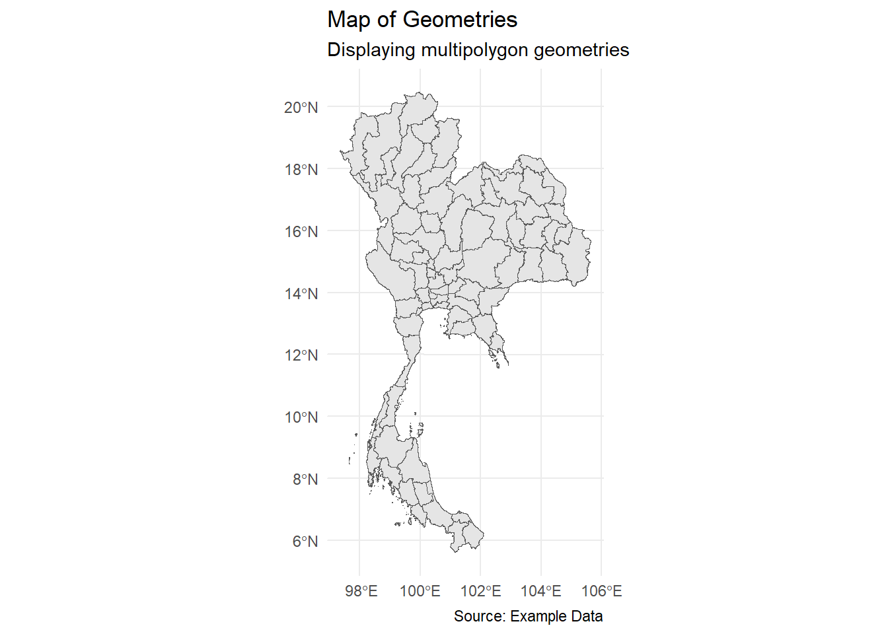
# Filter for unmatched province_names between Drug Offenses & Province Boundaries data set
unmatched_provinces <- drug_offenses %>%
left_join(province_boundaries, by = "province_name") %>%
filter(is.na(Shape_Leng)) %>%
select(province_name)
unmatched_provinces <- unique(unmatched_provinces) #Loburi, buogkan
# Transform the province_name in the Drug Offenses dataset
drug_offenses <- drug_offenses %>%
mutate(province_name = case_when(
province_name == "Loburi" ~ "Lop Buri",
province_name == "buogkan" ~ "Bueng Kan",
TRUE ~ province_name # Keep the original name if no match
))
# Assign each drug offense to a province
drug_offenses_by_province <- drug_offenses %>%
left_join(province_boundaries, by = "province_name")
# Check for any empty attributes in the test dataset
empty_attributes <- sapply(drug_offenses_by_province, function(column) any(is.na(column)))
# Identify columns with missing values
missing_columns <- names(empty_attributes[empty_attributes]) # character(0) = No missing Column
Warning
The Drug Offenses dataset has some naming issues with province_name.
We found two discrepancies: Loburi should be changed to Lop Buri, and buogkan should be updated to Bueng Kan to match the Province Boundaries dataset.
We will update the province_name entries in the Drug Offenses dataset accordingly.
2.0 Understanding the Data
offense_type <- unique(drug_offenses_by_province$offense_type)
print(offense_type) [1] "drug_use_cases"
[2] "suspects_in_drug_use_cases"
[3] "possession_cases"
[4] "suspects_in_possession_cases"
[5] "possession_with_intent_to_distribute_cases"
[6] "suspects_in_possession_with_intent_to_distribute_cases"
[7] "trafficking_cases"
[8] "suspects_in_trafficking_cases"
[9] "production_cases"
[10] "suspects_in_production_cases"
[11] "import_cases"
[12] "suspects_in_import_cases"
[13] "export_cases"
[14] "suspects_in_export_cases"
[15] "conspiracy_cases"
[16] "suspects_in_conspiracy_cases"
Note
These varying degrees of offense types may reveal patterns and trends in drug-related activities, providing a comprehensive understanding of the issue at hand.
3.0 Exploratory Data Analysis
Summary statistics
summary_stats <- drug_offenses_by_province %>%
group_by(province_name, year) %>%
summarise(
total_cases = sum(case_count, na.rm = TRUE),
geometry = first(geometry)
)
write_rds(summary_stats, "data/rds/summary_stats.rds")summary_stats <- read_rds("data/rds/summary_stats.rds")
summary_stats# A tibble: 462 × 4
# Groups: province_name [77]
province_name year total_cases geometry
<chr> <dbl> <dbl> <MULTIPOLYGON [°]>
1 Amnat Charoen 2017 5076 (((104.9654 16.28154, 104.9654 16.28148, 104…
2 Amnat Charoen 2018 5651 (((104.9654 16.28154, 104.9654 16.28148, 104…
3 Amnat Charoen 2019 7339 (((104.9654 16.28154, 104.9654 16.28148, 104…
4 Amnat Charoen 2020 3949 (((104.9654 16.28154, 104.9654 16.28148, 104…
5 Amnat Charoen 2021 8961 (((104.9654 16.28154, 104.9654 16.28148, 104…
6 Amnat Charoen 2022 4459 (((104.9654 16.28154, 104.9654 16.28148, 104…
7 Ang Thong 2017 1614 (((100.3381 14.79649, 100.3384 14.79607, 100…
8 Ang Thong 2018 2717 (((100.3381 14.79649, 100.3384 14.79607, 100…
9 Ang Thong 2019 2781 (((100.3381 14.79649, 100.3384 14.79607, 100…
10 Ang Thong 2020 2636 (((100.3381 14.79649, 100.3384 14.79607, 100…
# ℹ 452 more rowsTop /Bottom 10 Related-Drug Incidents Provinces
# Loop through each year and plot top 10 provinces
years_to_plot <- unique(summary_stats$year)top_10_plot_list <- list()
# Loop through each year and create the plots for top 10
for (current_year in years_to_plot) {
# Filter and sort the data for the specific year
top_10_year_data <- summary_stats %>%
filter(year == current_year) %>%
arrange(desc(total_cases)) %>%
head(10)
# Create the plot for the current year
top_10_plot <- ggplot(top_10_year_data, aes(x = reorder(province_name, total_cases), y = total_cases)) +
geom_bar(stat = "identity", fill = "pink", width = 0.8) +
coord_flip() +
labs(x = NULL, y = NULL, subtitle = paste("Year:", current_year)) +
scale_y_continuous(labels = scales::comma_format(accuracy = 1)) +
theme_minimal(base_size = 10) +
geom_text(aes(label = total_cases),
position = position_stack(vjust = 0.5),
color = "black",
size = 3) +
theme(axis.text.x = element_blank(), # Hide the y-axis text
axis.ticks.x = element_blank()) # Hide the y-axis ticks
# Add the plot to the list
top_10_plot_list[[as.character(current_year)]] <- top_10_plot
}
# Combine the top 10 plots into a grid
top_10_plot_list <- wrap_plots(top_10_plot_list)
# Add a single title to the combined plot
top_10_plot_list <- top_10_plot_list +
plot_annotation(title = "Top 10 Provinces by Total Drug Abuse Cases Over the Years")
write_rds(top_10_plot_list, "data/rds/top_10_plot_list.rds")print(read_rds("data/rds/top_10_plot_list.rds"))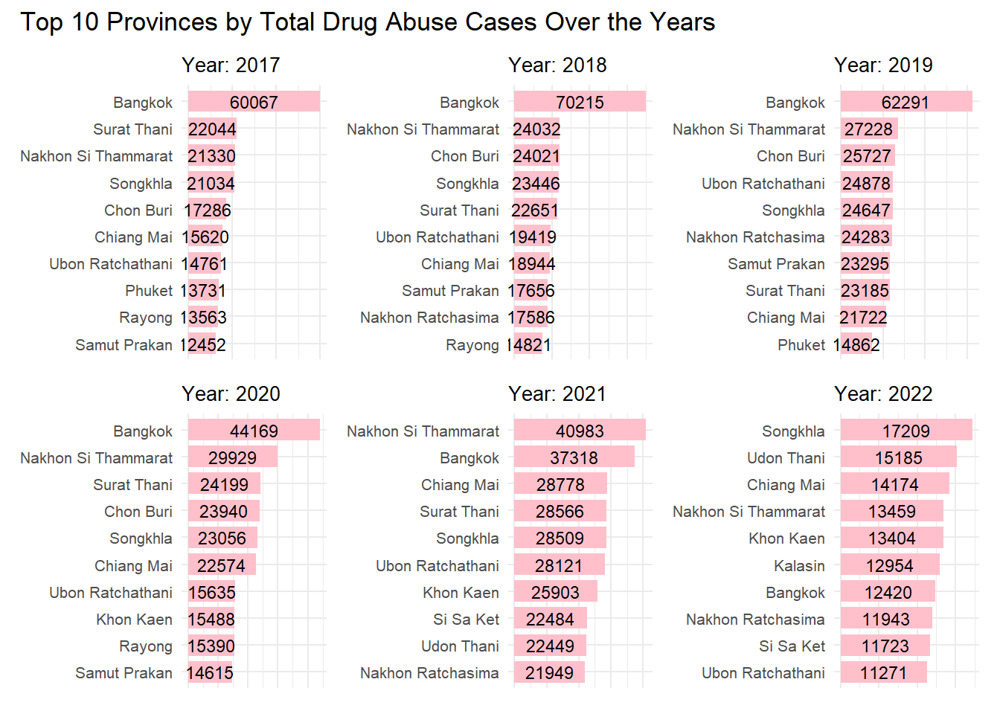
# Create a list to store the bottom 10 plots
bottom_10_plot_list <- list()
# Loop through each year and create the plots for bottom 10
for (current_year in years_to_plot) {
# Filter and sort the data for the specific year to get the bottom 10
bottom_10_year_data <- summary_stats %>%
filter(year == current_year) %>%
arrange(total_cases) %>% # Ascending order to get bottom cases
head(10)
# Create the plot for the current year
bottom_10_plot <- ggplot(bottom_10_year_data, aes(x = reorder(province_name, -total_cases), y = total_cases)) +
geom_bar(stat = "identity", fill = "steelblue", width = 0.8) +
coord_flip() +
labs(x = NULL, y = NULL, subtitle = paste("Year:", current_year)) + # Subtitle to display year
scale_y_continuous(labels = scales::comma_format(accuracy = 1)) +
theme_minimal(base_size = 10) +
geom_text(aes(label = total_cases),
position = position_stack(vjust = 0.5),
color = "black",
size = 3) +
theme(axis.text.x = element_blank(), # Hide the y-axis text
axis.ticks.x = element_blank()) # Hide the y-axis ticks
# Add the plot to the list
bottom_10_plot_list[[as.character(current_year)]] <- bottom_10_plot
}
# Combine the bottom 10 plots into a grid
bottom_10_plot_list <- wrap_plots(bottom_10_plot_list)
# Add a single title to the combined plot
bottom_10_plot_list <- bottom_10_plot_list +
plot_annotation(title = "Bottom 10 Provinces by Total Drug Abuse Cases Over the Years")
write_rds(bottom_10_plot_list, "data/rds/bottom_10_plot_list.rds")print(read_rds("data/rds/bottom_10_plot_list.rds"))
Trends over time for the entire country
drug_trends <- drug_offenses_by_province %>%
group_by(year) %>%
summarise(total_cases = sum(case_count))
# Plot trend over time with formatted y-axis labels
ggplot(drug_trends, aes(x = year, y = total_cases)) +
geom_line(color = "blue") +
geom_point(size = 3, color = "red") +
labs(title = "Drug Abuse Cases Over Time",
x = "Year", y = "Total Cases") +
scale_y_continuous(labels = comma)
4.0 Global Spatial Autocorrelation Analysis
Organize into years for more detailed analysis:
summary_stats <- st_as_sf(summary_stats)
summary_stats_2017 <- summary_stats %>%
filter(year == 2017) %>%
ungroup() # Remove any grouping
summary_stats_2018 <- summary_stats %>%
filter(year == 2018) %>%
ungroup() # Remove any grouping
summary_stats_2019 <- summary_stats %>%
filter(year == 2019) %>%
ungroup() # Remove any grouping
summary_stats_2020 <- summary_stats %>%
filter(year == 2020) %>%
ungroup() # Remove any grouping
summary_stats_2021 <- summary_stats %>%
filter(year == 2021) %>%
ungroup() # Remove any grouping
summary_stats_2022 <- summary_stats %>%
filter(year == 2022) %>%
ungroup() # Remove any groupingDeriving Queen’s Contiguity weights: sfdep methods
nb <- st_contiguity(summary_stats_2017$geometry)
wt <- st_weights(nb, style = "W", allow_zero = TRUE)
wm_q_2017 <- summary_stats_2017 %>%
mutate(
nb = nb,
wt = wt,
.before = 1
)
wm_q_2018 <- summary_stats_2018 %>%
mutate(
nb = nb,
wt = wt,
.before = 1
)
wm_q_2019 <- summary_stats_2019 %>%
mutate(
nb = nb,
wt = wt,
.before = 1
)
wm_q_2020 <- summary_stats_2020 %>%
mutate(
nb = nb,
wt = wt,
.before = 1
)
wm_q_2021 <- summary_stats_2021 %>%
mutate(
nb = nb,
wt = wt,
.before = 1
)
wm_q_2022 <- summary_stats_2022 %>%
mutate(
nb = nb,
wt = wt,
.before = 1
)
write_rds(wm_q_2017, "data/rds/wm_q_2017.rds")
write_rds(wm_q_2018, "data/rds/wm_q_2018.rds")
write_rds(wm_q_2019, "data/rds/wm_q_2019.rds")
write_rds(wm_q_2020, "data/rds/wm_q_2020.rds")
write_rds(wm_q_2021, "data/rds/wm_q_2021.rds")
write_rds(wm_q_2022, "data/rds/wm_q_2022.rds")Initialize for use later:
wm_q_2017 <- read_rds("data/rds/wm_q_2017.rds")
wm_q_2018 <- read_rds("data/rds/wm_q_2018.rds")
wm_q_2019 <- read_rds("data/rds/wm_q_2019.rds")
wm_q_2020 <- read_rds("data/rds/wm_q_2020.rds")
wm_q_2021 <- read_rds("data/rds/wm_q_2021.rds")
wm_q_2022 <- read_rds("data/rds/wm_q_2022.rds")
Note
To derive spatial autocorrelation, we first gather the relevant geographic points for our study area:
Filtering for Unique Geographic Points: The
summary_statsdataset contains multiple entries for each geographic point across different years. We filter it to retain data for a single year (e.g., 2017) to work with a unique set of locations.Identifying Neighbors: To assess the spatial relationships between areas, we identify neighboring regions. We use Queen’s contiguity weights, which include all neighbors that touch at edges or corners, capturing comprehensive spatial interactions.
Calculating Weights: After identifying neighbors, we calculate spatial weights that quantify the influence neighboring areas have on one another. These weights are crucial for measuring spatial autocorrelation, as they inform how a variable in one area relates to values in its neighbors.
2017: An Initial Overview
Global Moran’ I
moranI_2017 <- global_moran(wm_q_2017$total_cases,
wm_q_2017$nb,
wm_q_2017$wt)Warning in lag.listw(listw, z, zero.policy = zero.policy, NAOK = NAOK): NAs in
lagged valuesglimpse(moranI_2017)List of 2
$ I: num NA
$ K: num 31.4global_moran_test(wm_q_2017$total_cases,
wm_q_2017$nb,
wm_q_2017$wt,
zero.policy = TRUE)
Moran I test under randomisation
data: x
weights: listw
n reduced by no-neighbour observations
Moran I statistic standard deviate = 2.4598, p-value = 0.006951
alternative hypothesis: greater
sample estimates:
Moran I statistic Expectation Variance
0.133140650 -0.013333333 0.003545946
Note
Moran I statistic (0.133140650) -> indicates a positive correlation in the variable of interest (e.g., total cases).
SD of 2.4598 -> suggests that Moran’s I is greater than the expected value under the null hypothesis.
P-value of 0.006951 -> is < 0.05, indicating strong statistical significance.
Expectation of -0.013333333 -> suggests we would expect slight negative autocorrelation if there were no spatial structure.
Since the p-value < 0.05, we reject the null hypothesis of no spatial autocorrelation. This strongly suggests there is significant positive spatial clustering of the variable in the study area (regions with high values are near areas with high values).
set.seed(1234)
global_moran_perm_result_2017 <- global_moran_perm(wm_q_2017$total_cases,
wm_q_2017$nb,
wm_q_2017$wt,
zero.policy = TRUE,
nsim = 99)
global_moran_perm_result_2017
Monte-Carlo simulation of Moran I
data: x
weights: listw
number of simulations + 1: 100
statistic = 0.13314, observed rank = 98, p-value = 0.04
alternative hypothesis: two.sidedsummary(global_moran_perm_result_2017$res) Min. 1st Qu. Median Mean 3rd Qu. Max.
-0.151935 -0.056539 -0.030537 -0.018749 0.008258 0.162326 png("data/rds/global_moran_perm_result_2017.png", width = 1600, height = 1000)
# Adjust font size and scaling using par()
par(cex = 2, # Overall scaling for text and symbols
cex.axis = 1.5, # Axis text size
cex.lab = 2, # Axis label size
cex.main = 2.5, # Main title size
mar = c(5, 5, 4, 2) + 0.1) # Adjust margins for more space around the plot
# Extract the simulated statistics and observed statistic
simulated_values <- global_moran_perm_result_2017$res
global_moran_perm_hist_2017 <- hist(simulated_values,
freq=TRUE,
breaks=20,
xlab="Simulated Moran's I in 2017")
abline(v=0,
col="red")
# Close the graphic device
dev.off()image_read("data/rds/global_moran_perm_result_2017.png")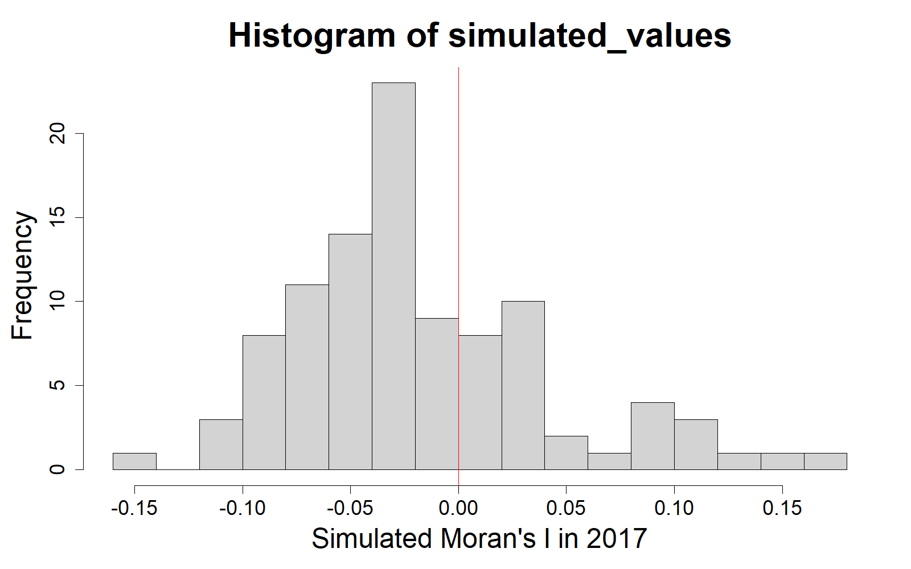
Note
To ensure our results are accurate, we’ll perform a Monte Carlo (permutation) test on Moran’s I statistic. This method helps us understand if the observed clustering of values is statistically significant.
First, we set the seed using set.seed(1234). This step is crucial because it guarantees that our simulation results will be reproducible. Every time we run the simulation, we should get the same outcomes, which is important for consistency in our analysis.
Now, looking at the results from our permutation test:
Moran’s I statistic: 0.13314
Observed rank: 98
P-value: 0.04
The p-value being less than 0.05 tells us that there’s strong statistical evidence against the null hypothesis of no spatial autocorrelation. This means we can conclude there’s significant positive spatial clustering in our data—areas with high values are near other areas with high values.
Looking at the summary of the simulated statistics, with the maximum being 0.162326 and the minimum at -0.151935. The distribution of these values helps us understand the expected behavior of our statistic under the null hypothesis.
Note
It’s important to note that some areas may have no neighboring regions, which results in null weights. To address this, we use zero.policy = TRUE in our analysis, allowing regions with no neighbors to be included without causing errors in calculations.
However, it’s essential to understand that Global Moran’s I does not accommodate regions without neighbors in its calculations, meaning that these regions, even when included, will not contribute to the overall assessment of spatial autocorrelation.
Consequently, regions with null weights may still affect the results, leading to potential skewing of the analysis and limiting its interpretability. Therefore, careful consideration of how to handle such regions is crucial for ensuring accurate spatial analysis.
Visualising across time span (2017-2022)
Performing Global Moran’s I permutation test (Monte Carlo)
set.seed(1234)
global_moran_perm_result_2018 <- global_moran_perm(wm_q_2018$total_cases,
wm_q_2018$nb,
wm_q_2018$wt,
zero.policy = TRUE,
nsim = 99)
global_moran_perm_result_2018
Monte-Carlo simulation of Moran I
data: x
weights: listw
number of simulations + 1: 100
statistic = 0.11637, observed rank = 96, p-value = 0.08
alternative hypothesis: two.sidedsummary(global_moran_perm_result_2018$res) Min. 1st Qu. Median Mean 3rd Qu. Max.
-0.13864 -0.06366 -0.02856 -0.01870 0.02001 0.17737 png("data/rds/global_moran_perm_result_2018.png", width = 1600, height = 1000)
# Adjust font size and scaling using par()
par(cex = 2, # Overall scaling for text and symbols
cex.axis = 1.5, # Axis text size
cex.lab = 2, # Axis label size
cex.main = 2.5, # Main title size
mar = c(5, 5, 4, 2) + 0.1) # Adjust margins for more space around the plot
# Extract the simulated statistics and observed statistic
simulated_values <- global_moran_perm_result_2018$res
hist(simulated_values,
freq=TRUE,
breaks=20,
xlab="Simulated Moran's I in 2018")
abline(v=0,
col="red")
# Close the graphic device
dev.off()image_read("data/rds/global_moran_perm_result_2018.png")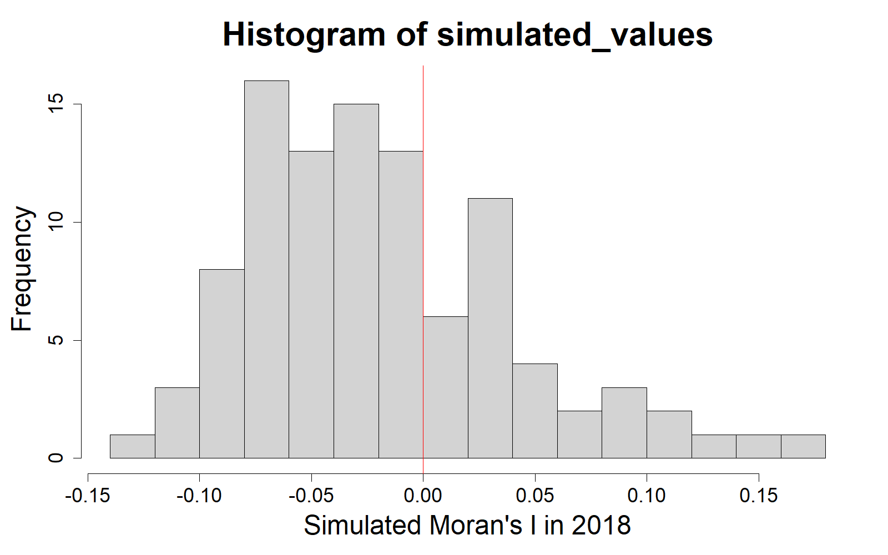
Performing Global Moran’s I permutation test (Monte Carlo)
set.seed(1234)
global_moran_perm_result_2019 <- global_moran_perm(wm_q_2019$total_cases,
wm_q_2019$nb,
wm_q_2019$wt,
zero.policy = TRUE,
nsim = 99)
global_moran_perm_result_2019
Monte-Carlo simulation of Moran I
data: x
weights: listw
number of simulations + 1: 100
statistic = 0.15541, observed rank = 98, p-value = 0.04
alternative hypothesis: two.sidedsummary(global_moran_perm_result_2019$res) Min. 1st Qu. Median Mean 3rd Qu. Max.
-0.14482 -0.06808 -0.02675 -0.01963 0.01235 0.19844 png("data/rds/global_moran_perm_result_2019.png", width = 1600, height = 1000)
# Adjust font size and scaling using par()
par(cex = 2, # Overall scaling for text and symbols
cex.axis = 1.5, # Axis text size
cex.lab = 2, # Axis label size
cex.main = 2.5, # Main title size
mar = c(5, 5, 4, 2) + 0.1) # Adjust margins for more space around the plot
# Extract the simulated statistics and observed statistic
simulated_values <- global_moran_perm_result_2019$res
hist(simulated_values,
freq=TRUE,
breaks=20,
xlab="Simulated Moran's I in 2019")
abline(v=0,
col="red")
# Close the graphic device
dev.off()image_read("data/rds/global_moran_perm_result_2019.png")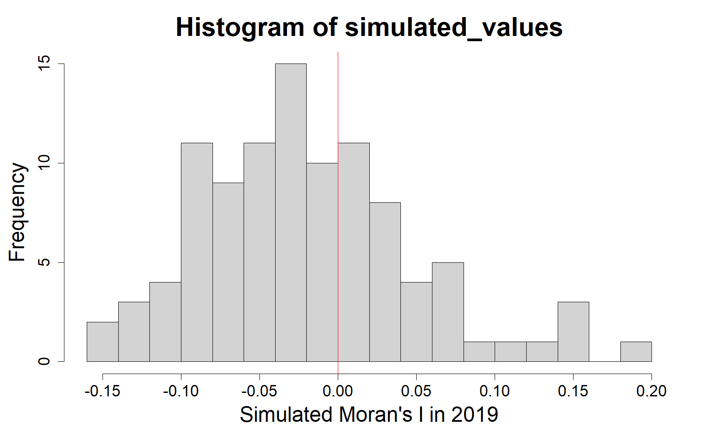
Performing Global Moran’s I permutation test (Monte Carlo)
set.seed(1234)
global_moran_perm_result_2020 <- global_moran_perm(wm_q_2020$total_cases,
wm_q_2020$nb,
wm_q_2020$wt,
zero.policy = TRUE,
nsim = 99)
global_moran_perm_result_2020
Monte-Carlo simulation of Moran I
data: x
weights: listw
number of simulations + 1: 100
statistic = 0.1296, observed rank = 97, p-value = 0.06
alternative hypothesis: two.sidedsummary(global_moran_perm_result_2020$res) Min. 1st Qu. Median Mean 3rd Qu. Max.
-0.152560 -0.076142 -0.031856 -0.026822 0.006521 0.194366 png("data/rds/global_moran_perm_result_2020.png", width = 1600, height = 1000)
# Adjust font size and scaling using par()
par(cex = 2, # Overall scaling for text and symbols
cex.axis = 1.5, # Axis text size
cex.lab = 2, # Axis label size
cex.main = 2.5, # Main title size
mar = c(5, 5, 4, 2) + 0.1) # Adjust margins for more space around the plot
# Extract the simulated statistics and observed statistic
simulated_values <- global_moran_perm_result_2020$res
hist(simulated_values,
freq=TRUE,
breaks=20,
xlab="Simulated Moran's I in 2020")
abline(v=0,
col="red")
# Close the graphic device
dev.off()image_read("data/rds/global_moran_perm_result_2020.png")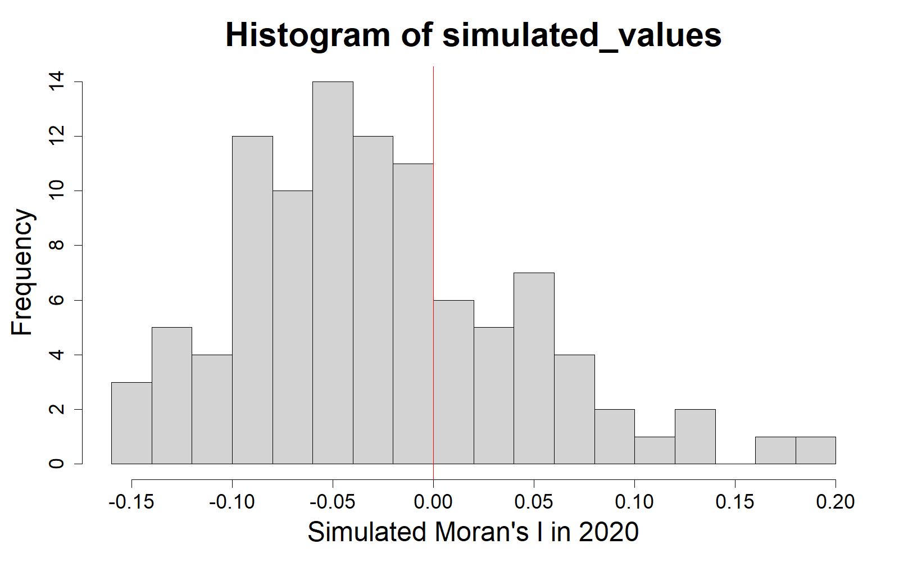
Performing Global Moran’s I permutation test (Monte Carlo)
set.seed(1234)
global_moran_perm_result_2021 <- global_moran_perm(wm_q_2021$total_cases,
wm_q_2021$nb,
wm_q_2021$wt,
zero.policy = TRUE,
nsim = 99)
global_moran_perm_result_2021
Monte-Carlo simulation of Moran I
data: x
weights: listw
number of simulations + 1: 100
statistic = 0.19889, observed rank = 100, p-value < 2.2e-16
alternative hypothesis: two.sidedsummary(global_moran_perm_result_2021$res) Min. 1st Qu. Median Mean 3rd Qu. Max.
-0.17499 -0.08997 -0.02457 -0.02653 0.02894 0.19889 png("data/rds/global_moran_perm_result_2021.png", width = 1600, height = 1000)
# Adjust font size and scaling using par()
par(cex = 2, # Overall scaling for text and symbols
cex.axis = 1.5, # Axis text size
cex.lab = 2, # Axis label size
cex.main = 2.5, # Main title size
mar = c(5, 5, 4, 2) + 0.1) # Adjust margins for more space around the plot
# Extract the simulated statistics and observed statistic
simulated_values <- global_moran_perm_result_2021$res
hist(simulated_values,
freq=TRUE,
breaks=20,
xlab="Simulated Moran's I in 2021")
abline(v=0,
col="red")
# Close the graphic device
dev.off() image_read("data/rds/global_moran_perm_result_2021.png")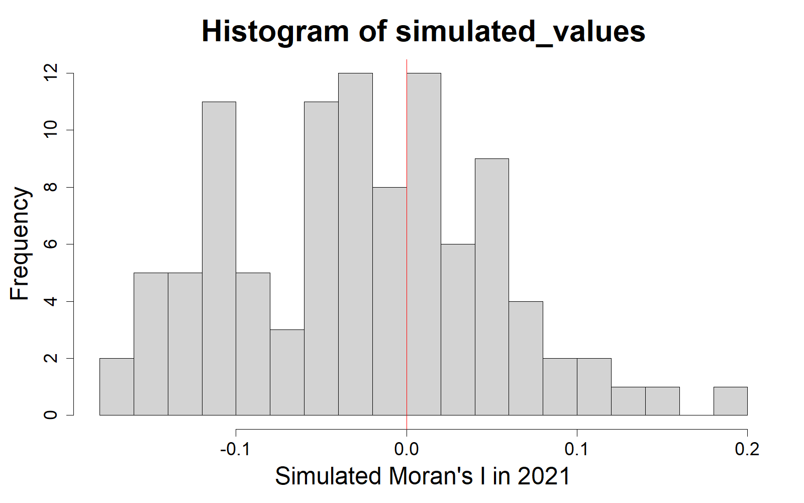
Performing Global Moran’s I permutation test (Monte Carlo)
set.seed(1234)
global_moran_perm_result_2022 <- global_moran_perm(wm_q_2022$total_cases,
wm_q_2022$nb,
wm_q_2022$wt,
zero.policy = TRUE,
nsim = 99)
global_moran_perm_result_2022
Monte-Carlo simulation of Moran I
data: x
weights: listw
number of simulations + 1: 100
statistic = 0.20113, observed rank = 100, p-value < 2.2e-16
alternative hypothesis: two.sidedsummary(global_moran_perm_result_2022$res) Min. 1st Qu. Median Mean 3rd Qu. Max.
-0.17928 -0.09257 -0.03519 -0.02521 0.03933 0.20113 png("data/rds/global_moran_perm_result_2022.png", width = 1600, height = 1000)
# Adjust font size and scaling using par()
par(cex = 2, # Overall scaling for text and symbols
cex.axis = 1.5, # Axis text size
cex.lab = 2, # Axis label size
cex.main = 2.5, # Main title size
mar = c(5, 5, 4, 2) + 0.1) # Adjust margins for more space around the plot
# Extract the simulated statistics and observed statistic
simulated_values <- global_moran_perm_result_2022$res
hist(simulated_values,
freq=TRUE,
breaks=20,
xlab="Simulated Moran's I in 2022")
abline(v=0,
col="red")
# Close the graphic device
dev.off()image_read("data/rds/global_moran_perm_result_2022.png")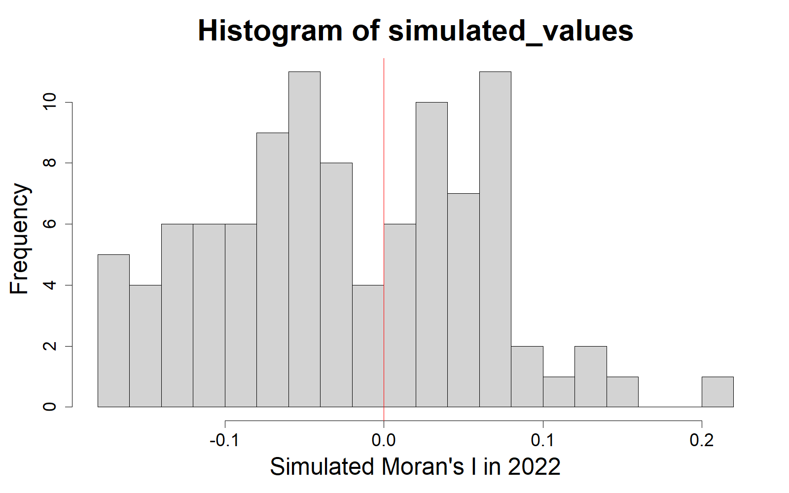
Note
The results indicate a general trend of positive spatial autocorrelation from 2017 to 2022, with significant clustering observed in 2021 and 2022.
The years 2017, 2019, 2021, and 2022 show statistically significant evidence of clustering, while 2018 and 2020 have lower evidence of spatial correlation.
This trend suggests that the variable of interest tends to cluster in certain areas, particularly from 2021 onwards, which may warrant further investigation into the factors driving this clustering.
# Get a list of image files in the specified directory
global_moran_perm_result_files <- list.files("data/rds/", pattern = "\\.png$", full.names = TRUE)
# Load saved images and combine them into an animated GIF
global_moran_images <- lapply(global_moran_perm_result_files, image_read)
# Create an animation from the Global Moran's images
global_moran_animation <- image_animate(image_join(global_moran_images), fps = 1)
# Save the animation as a GIF file
image_write(global_moran_animation, path = "data/rds/global_moran_animation.gif")image_read("data/rds/global_moran_animation.gif")5.0 Local Spatial Autocorrelation Analysis
Visualising LISA Map
Computing Local Moran’s I
lisa_2017 <- wm_q_2017 %>%
mutate(local_moran = local_moran(
total_cases, nb, wt, nsim = 99, zero.policy = TRUE),
.before = 1) %>%
unnest(local_moran)Local Moran’s I VS P-Value
png("data/rds/local_moran_vs_pvalue_map_2017.png", width = 1600, height = 1000)
tmap_mode("plot")
local_moran_map_2017 <- tm_shape(lisa_2017) +
tm_fill("ii") +
tm_borders(alpha = 0.5) +
tm_view(set.zoom.limits = c(6,8)) +
tm_layout(main.title = "local Moran's I of Total Cases in 2017",
main.title.size = 2.5,
legend.text.size = 2.0,
legend.title.size = 2.7)
local_moran_pvalue_map_2017 <- tm_shape(lisa_2017) +
tm_fill("p_ii",
breaks = c(0, 0.001, 0.01, 0.05, 1),
labels = c(
"Highly significant (< 0.001)",
"Significant (0.001 - 0.01)",
"Moderately significant (0.01 - 0.05)",
"Not significant (> 0.05)"
)) +
tm_borders(alpha = 0.5) +
tm_layout(main.title = "p-value of local Moran's I of Total Cases in 2017",
main.title.size = 2.5,
legend.text.size = 2.0,
legend.title.size = 2.7)
tmap_arrange(local_moran_map_2017, local_moran_pvalue_map_2017, ncol = 2)
# Close the graphic device
dev.off()image_read("data/rds/local_moran_vs_pvalue_map_2017.png")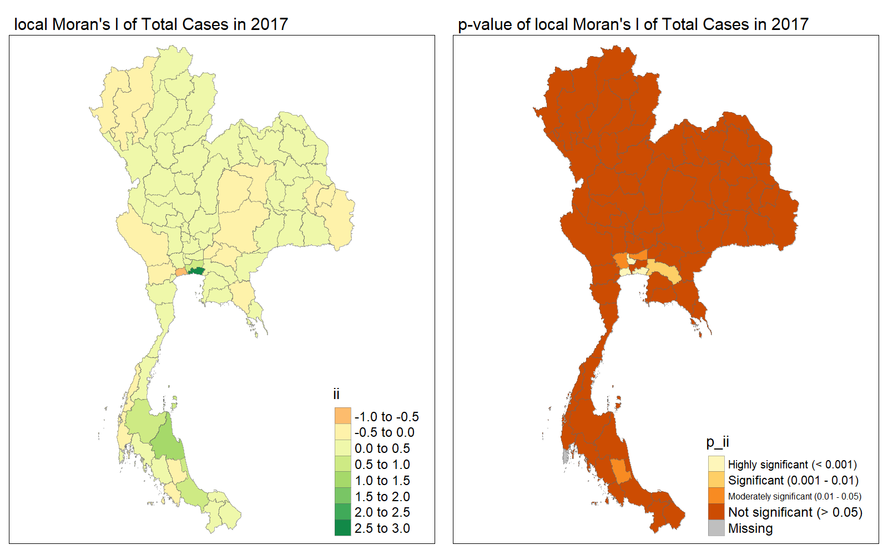
Putting together
png("data/rds/lisa_map_2017.png", width = 1600, height = 1200)
lisa_sig_2017 <- lisa_2017 %>%
filter(p_ii_sim < 0.05)
tmap_mode("plot")
tm_shape(lisa_2017) +
tm_polygons() +
tm_borders(alpha = 0.5) +
tm_shape(lisa_sig_2017) +
tm_fill("mean") +
tm_borders(alpha = 0.4) +
tm_layout(main.title = "LISA Map 2017",
main.title.size = 2.5,
legend.text.size = 2.0,
legend.title.size = 2.7,
legend.position = c("right", "bottom"),
frame = TRUE) # Add a frame around the map
# Close the graphic device
dev.off()image_read("data/rds/lisa_map_2017.png")Computing Local Moran’s I
lisa_2018 <- wm_q_2018 %>%
mutate(local_moran = local_moran(
total_cases, nb, wt, nsim = 99, zero.policy = TRUE),
.before = 1) %>%
unnest(local_moran)Local Moran’s I VS P-Value
png("data/rds/local_moran_vs_pvalue_map_2018.png", width = 1600, height = 1000)
tmap_mode("plot")
local_moran_map_2018 <- tm_shape(lisa_2018) +
tm_fill("ii") +
tm_borders(alpha = 0.5) +
tm_view(set.zoom.limits = c(6,8)) +
tm_layout(main.title = "local Moran's I of Total Cases in 2018",
main.title.size = 2.5,
legend.text.size = 2.0,
legend.title.size = 2.7)
local_moran_pvalue_map_2018 <- tm_shape(lisa_2018) +
tm_fill("p_ii",
breaks = c(0, 0.001, 0.01, 0.05, 1),
labels = c(
"Highly significant (< 0.001)",
"Significant (0.001 - 0.01)",
"Moderately significant (0.01 - 0.05)",
"Not significant (> 0.05)"
)) +
tm_borders(alpha = 0.5) +
tm_layout(main.title = "p-value of local Moran's I of Total Cases in 2018",
main.title.size = 2.5,
legend.text.size = 2.0,
legend.title.size = 2.7)
tmap_arrange(local_moran_map_2018, local_moran_pvalue_map_2018, ncol = 2)
# Close the graphic device
dev.off()image_read("data/rds/local_moran_vs_pvalue_map_2018.png")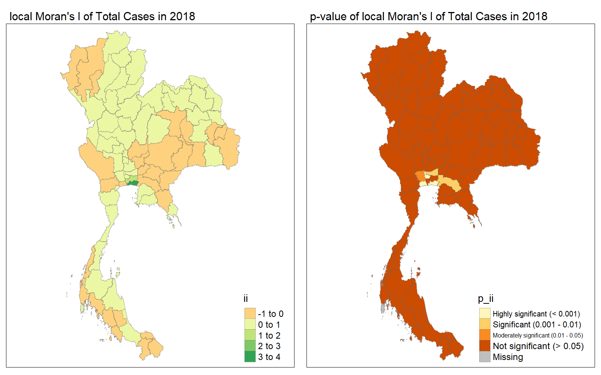
Putting together
png("data/rds/lisa_map_2018.png", width = 1600, height = 1200)
lisa_sig_2018 <- lisa_2018 %>%
filter(p_ii_sim < 0.05)
tmap_mode("plot")
tm_shape(lisa_2018) +
tm_polygons() +
tm_borders(alpha = 0.5) +
tm_shape(lisa_sig_2018) +
tm_fill("mean") +
tm_borders(alpha = 0.4) +
tm_layout(main.title = "LISA Map 2018",
main.title.size = 2.5,
legend.text.size = 2.0,
legend.title.size = 2.7,
legend.position = c("right", "bottom"),
frame = TRUE) # Add a frame around the map
# Close the graphic device
dev.off()image_read("data/rds/lisa_map_2018.png")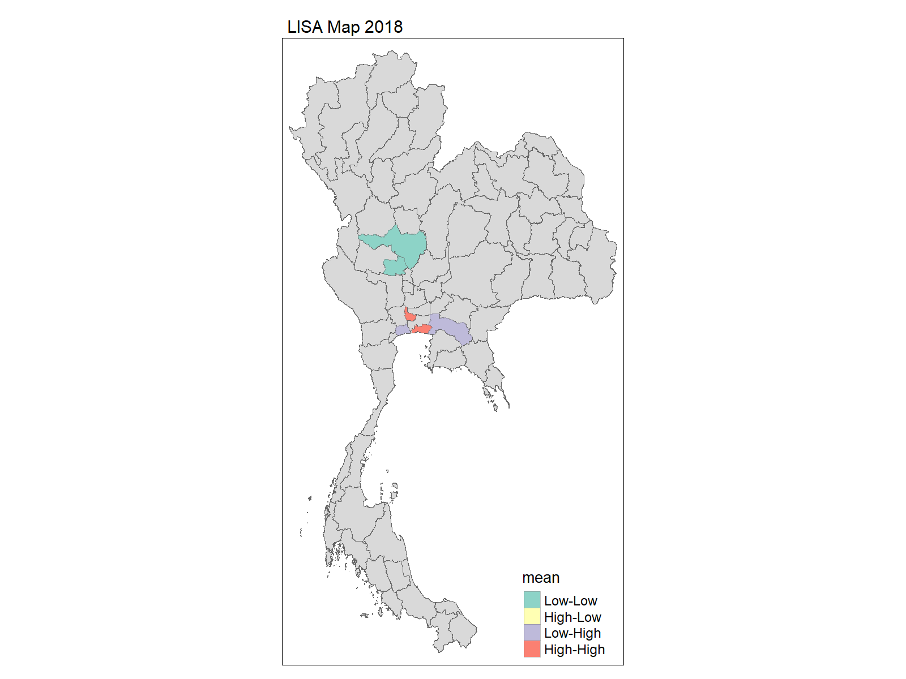
Computing Local Moran’s I
lisa_2019 <- wm_q_2019 %>%
mutate(local_moran = local_moran(
total_cases, nb, wt, nsim = 99, zero.policy = TRUE),
.before = 1) %>%
unnest(local_moran)Local Moran’s I VS P-Value
png("data/rds/local_moran_vs_pvalue_map_2019.png", width = 1600, height = 1000)
tmap_mode("plot")
local_moran_map_2019 <- tm_shape(lisa_2019) +
tm_fill("ii") +
tm_borders(alpha = 0.5) +
tm_view(set.zoom.limits = c(6,8)) +
tm_layout(main.title = "local Moran's I of Total Cases in 2019",
main.title.size = 2.5,
legend.text.size = 2.0,
legend.title.size = 2.7)
local_moran_pvalue_map_2019 <- tm_shape(lisa_2019) +
tm_fill("p_ii",
breaks = c(0, 0.001, 0.01, 0.05, 1),
labels = c(
"Highly significant (< 0.001)",
"Significant (0.001 - 0.01)",
"Moderately significant (0.01 - 0.05)",
"Not significant (> 0.05)"
)) +
tm_borders(alpha = 0.5) +
tm_layout(main.title = "p-value of local Moran's I of Total Cases in 2019",
main.title.size = 2.5,
legend.text.size = 2.0,
legend.title.size = 2.7)
tmap_arrange(local_moran_map_2019, local_moran_pvalue_map_2019, ncol = 2)
# Close the graphic device
dev.off()image_read("data/rds/local_moran_vs_pvalue_map_2019.png")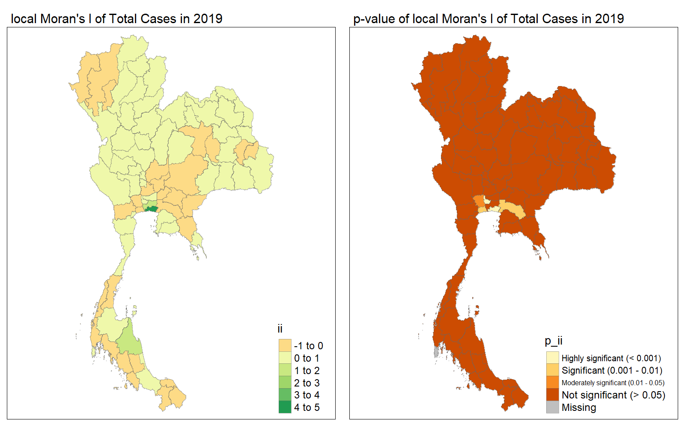
Putting together
png("data/rds/lisa_map_2019.png", width = 1600, height = 1200)
lisa_sig_2019 <- lisa_2019 %>%
filter(p_ii_sim < 0.05)
tmap_mode("plot")
tm_shape(lisa_2019) +
tm_polygons() +
tm_borders(alpha = 0.5) +
tm_shape(lisa_sig_2019) +
tm_fill("mean") +
tm_borders(alpha = 0.4) +
tm_layout(main.title = "LISA Map 2019",
main.title.size = 2.5,
legend.text.size = 2.0,
legend.title.size = 2.7,
legend.position = c("right", "bottom"),
frame = TRUE) # Add a frame around the map
# Close the graphic device
dev.off()image_read("data/rds/lisa_map_2019.png")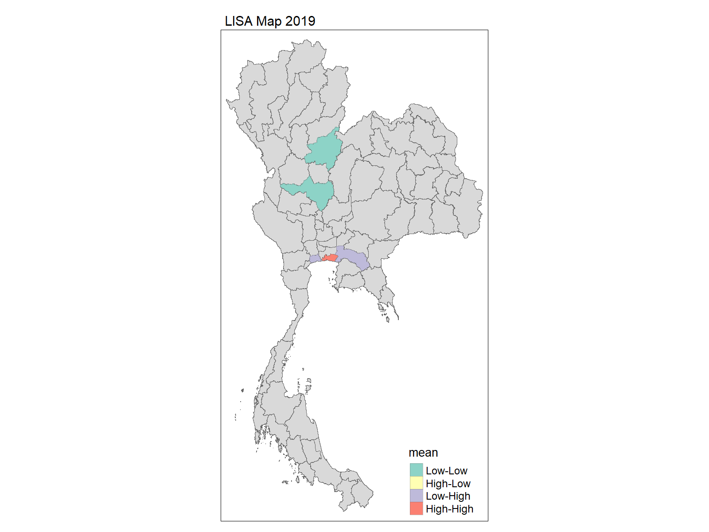
Computing Local Moran’s I
lisa_2020 <- wm_q_2020 %>%
mutate(local_moran = local_moran(
total_cases, nb, wt, nsim = 99, zero.policy = TRUE),
.before = 1) %>%
unnest(local_moran)Local Moran’s I VS P-Value
png("data/rds/local_moran_vs_pvalue_map_2020.png", width = 1600, height = 1000)
tmap_mode("plot")
local_moran_map_2020 <- tm_shape(lisa_2020) +
tm_fill("ii") +
tm_borders(alpha = 0.5) +
tm_view(set.zoom.limits = c(6,8)) +
tm_layout(main.title = "local Moran's I of Total Cases in 2020",
main.title.size = 2.5,
legend.text.size = 2.0,
legend.title.size = 2.7)
local_moran_pvalue_map_2020 <- tm_shape(lisa_2020) +
tm_fill("p_ii",
breaks = c(0, 0.001, 0.01, 0.05, 1),
labels = c(
"Highly significant (< 0.001)",
"Significant (0.001 - 0.01)",
"Moderately significant (0.01 - 0.05)",
"Not significant (> 0.05)"
)) +
tm_borders(alpha = 0.5) +
tm_layout(main.title = "p-value of local Moran's I of Total Cases in 2020",
main.title.size = 2.5,
legend.text.size = 2.0,
legend.title.size = 2.7)
tmap_arrange(local_moran_map_2020, local_moran_pvalue_map_2020, ncol = 2)
# Close the graphic device
dev.off()image_read("data/rds/local_moran_vs_pvalue_map_2020.png")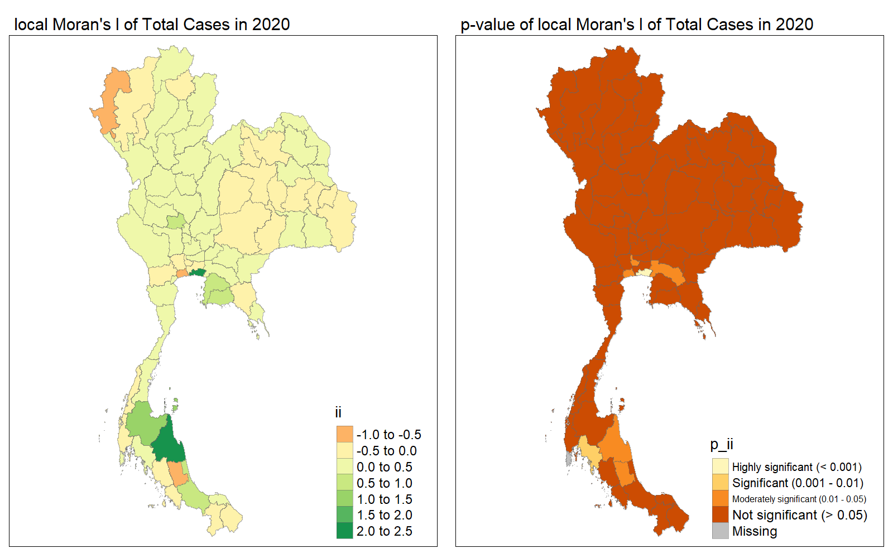
Putting together
png("data/rds/lisa_map_2020.png", width = 1600, height = 1200)
lisa_sig_2020 <- lisa_2020 %>%
filter(p_ii_sim < 0.05)
tmap_mode("plot")
tm_shape(lisa_2020) +
tm_polygons() +
tm_borders(alpha = 0.5) +
tm_shape(lisa_sig_2020) +
tm_fill("mean") +
tm_borders(alpha = 0.4) +
tm_layout(main.title = "LISA Map 2020",
main.title.size = 2.5,
legend.text.size = 2.0,
legend.title.size = 2.7,
legend.position = c("right", "bottom"),
frame = TRUE) # Add a frame around the map
# Close the graphic device
dev.off()image_read("data/rds/lisa_map_2020.png")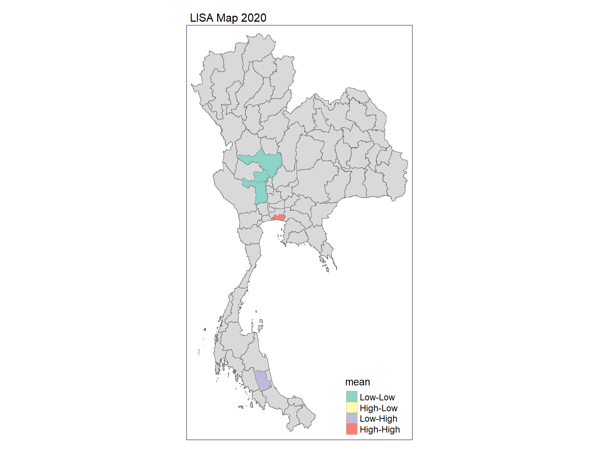
Computing Local Moran’s I
lisa_2021 <- wm_q_2021 %>%
mutate(local_moran = local_moran(
total_cases, nb, wt, nsim = 99, zero.policy = TRUE),
.before = 1) %>%
unnest(local_moran)Local Moran’s I VS P-Value
png("data/rds/local_moran_vs_pvalue_map_2021.png", width = 1600, height = 1000)
tmap_mode("plot")
local_moran_map_2021 <- tm_shape(lisa_2021) +
tm_fill("ii") +
tm_borders(alpha = 0.5) +
tm_view(set.zoom.limits = c(6,8)) +
tm_layout(main.title = "local Moran's I of Total Cases in 2021",
main.title.size = 2.5,
legend.text.size = 2.0,
legend.title.size = 2.7)
local_moran_pvalue_map_2021 <- tm_shape(lisa_2021) +
tm_fill("p_ii",
breaks = c(0, 0.001, 0.01, 0.05, 1),
labels = c(
"Highly significant (< 0.001)",
"Significant (0.001 - 0.01)",
"Moderately significant (0.01 - 0.05)",
"Not significant (> 0.05)"
)) +
tm_borders(alpha = 0.5) +
tm_layout(main.title = "p-value of local Moran's I of Total Cases in 2021",
main.title.size = 2.5,
legend.text.size = 2.0,
legend.title.size = 2.7)
tmap_arrange(local_moran_map_2021, local_moran_pvalue_map_2021, ncol = 2)
# Close the graphic device
dev.off()image_read("data/rds/local_moran_vs_pvalue_map_2021.png")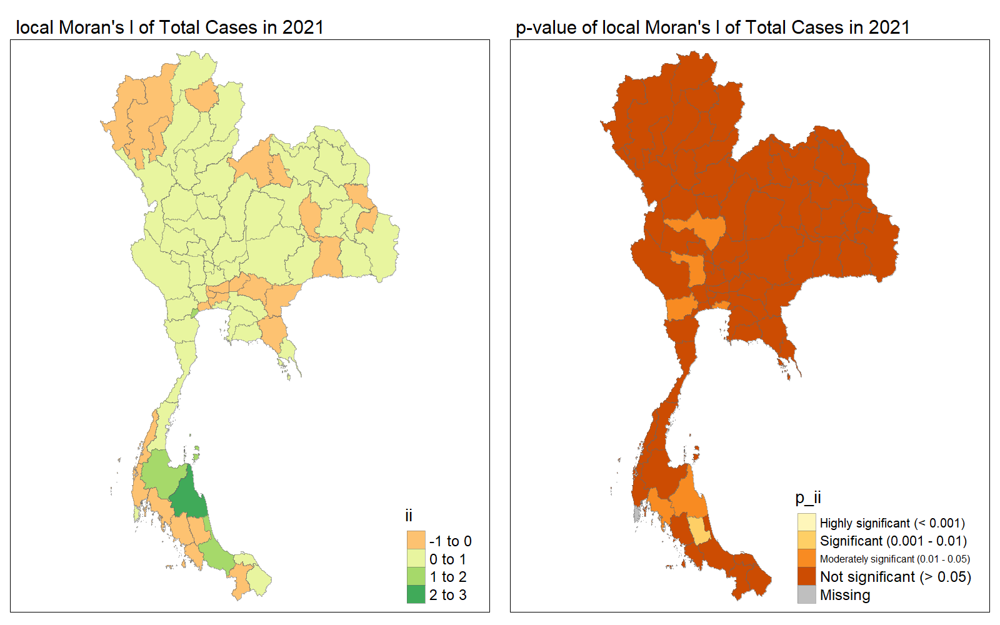
Putting together
png("data/rds/lisa_map_2021.png", width = 1600, height = 1200)
lisa_sig_2021 <- lisa_2021 %>%
filter(p_ii_sim < 0.05)
tmap_mode("plot")
tm_shape(lisa_2021) +
tm_polygons() +
tm_borders(alpha = 0.5) +
tm_shape(lisa_sig_2021) +
tm_fill("mean") +
tm_borders(alpha = 0.4) +
tm_layout(main.title = "LISA Map 2021",
main.title.size = 2.5,
legend.text.size = 2.0,
legend.title.size = 2.7,
legend.position = c("right", "bottom"),
frame = TRUE) # Add a frame around the map
# Close the graphic device
dev.off()image_read("data/rds/lisa_map_2021.png")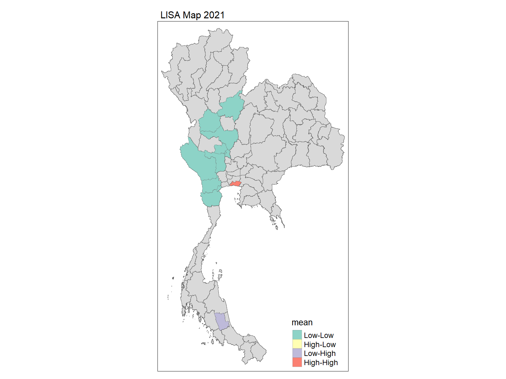
Computing Local Moran’s I
lisa_2022 <- wm_q_2022 %>%
mutate(local_moran = local_moran(
total_cases, nb, wt, nsim = 99, zero.policy = TRUE),
.before = 1) %>%
unnest(local_moran)Local Moran’s I VS P-Value
png("data/rds/local_moran_vs_pvalue_map_2022.png", width = 1600, height = 1000)
tmap_mode("plot")
local_moran_map_2022 <- tm_shape(lisa_2022) +
tm_fill("ii") +
tm_borders(alpha = 0.5) +
tm_view(set.zoom.limits = c(6,8)) +
tm_layout(main.title = "local Moran's I of Total Cases in 2022",
main.title.size = 2.5,
legend.text.size = 2.0,
legend.title.size = 2.7)
local_moran_pvalue_map_2022 <- tm_shape(lisa_2022) +
tm_fill("p_ii",
breaks = c(0, 0.001, 0.01, 0.05, 1),
labels = c(
"Highly significant (< 0.001)",
"Significant (0.001 - 0.01)",
"Moderately significant (0.01 - 0.05)",
"Not significant (> 0.05)"
)) +
tm_borders(alpha = 0.5) +
tm_layout(main.title = "p-value of local Moran's I of Total Cases in 2022",
main.title.size = 2.5,
legend.text.size = 2.0,
legend.title.size = 2.7)
tmap_arrange(local_moran_map_2022, local_moran_pvalue_map_2022, ncol = 2)
# Close the graphic device
dev.off()image_read("data/rds/local_moran_vs_pvalue_map_2022.png")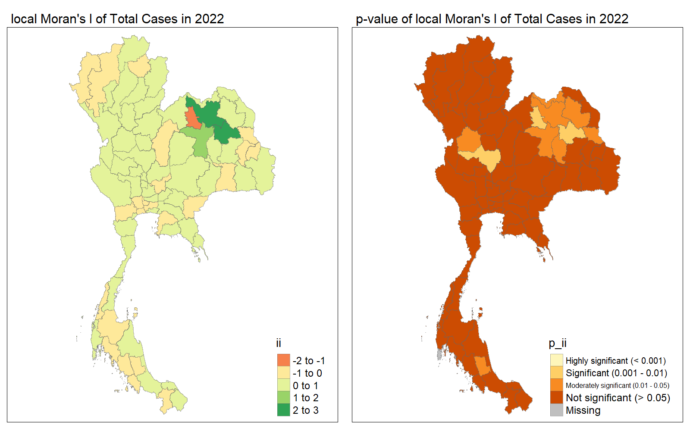
Putting together
png("data/rds/lisa_map_2022.png", width = 1600, height = 1200)
lisa_sig_2022 <- lisa_2022 %>%
filter(p_ii_sim < 0.05)
tmap_mode("plot")
tm_shape(lisa_2022) +
tm_polygons() +
tm_borders(alpha = 0.5) +
tm_shape(lisa_sig_2022) +
tm_fill("mean") +
tm_borders(alpha = 0.4) +
tm_layout(main.title = "LISA Map 2022",
main.title.size = 2.5,
legend.text.size = 2.0,
legend.title.size = 2.7,
legend.position = c("right", "bottom"),
frame = TRUE) # Add a frame around the map
# Close the graphic device
dev.off()image_read("data/rds/lisa_map_2022.png")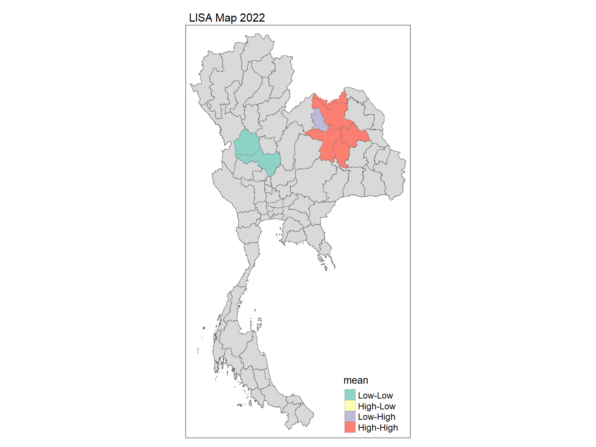
Note
Computing Local Moran’s I
add new column [local_moran] -> stores the calculated Local Moran’s I values
zero.policy = TRUE option allows the method to handle regions without neighbors appropriately.
unnest(local_moran) -> flatten the results, simplifying further analysis of the output.
Local Moran’s I VS P-Value Visualization
This segment creates visualizations for the Local Moran’s I statistic and its associated p-values for the year 2017
Local Moran’s I values (color-coded) indicating spatial clustering: Ranges from -1.0 (cold spots) to 3.0 (strong hot spots). Provides insights into areas of similar or dissimilar values in case distribution.
P-Value Map:
Illustrates the statistical significance of Local Moran’s I: Breaks defined for p-values (< 0.001, 0.001-0.01, 0.01-0.05, > 0.05).
Putting Together Significant LISA Results
This segment visualizes the significant clusters identified by the Local Moran’s I analysis.
The visualization includes both all regions and the significant clusters, with the latter highlighted based on their mean Local Moran’s I values.
- Low-Low (LL)
Definition: Areas with low values surrounded by other low-value areas.
Interpretation: Indicates regions that are underperforming or stable and may not need immediate intervention.
- High-Low (HL)
Definition: Areas with high values surrounded by low-value areas.
Interpretation: Highlights potential hotspots that require further investigation or targeted intervention.
- Low-High (LH)
Definition: Areas with low values surrounded by high-value areas.
Interpretation: Suggests vulnerability to spillover effects from neighboring high-value regions, requiring monitoring.
- High-High (HH)
Definition: Areas with high values surrounded by other high-value areas.
Interpretation: Identifies significant hotspots that may need immediate attention and indicate systemic issues.
Visualising LISA map across time span (2017-2022)
# Get a list of image files in the specified directory for LISA maps
lisa_map_files <- list.files("data/rds/", pattern = "lisa_map_\\d{4}\\.png$", full.names = TRUE)
# Load saved images and combine them into an animated GIF
lisa_images <- lapply(lisa_map_files, image_read)
# Create an animation from the LISA map images
lisa_animation <- image_animate(image_join(lisa_images), fps = 1)
# Save the animation as a GIF file
image_write(lisa_animation, path = "data/rds/lisa_animation.gif")image_read("data/rds/lisa_animation.gif")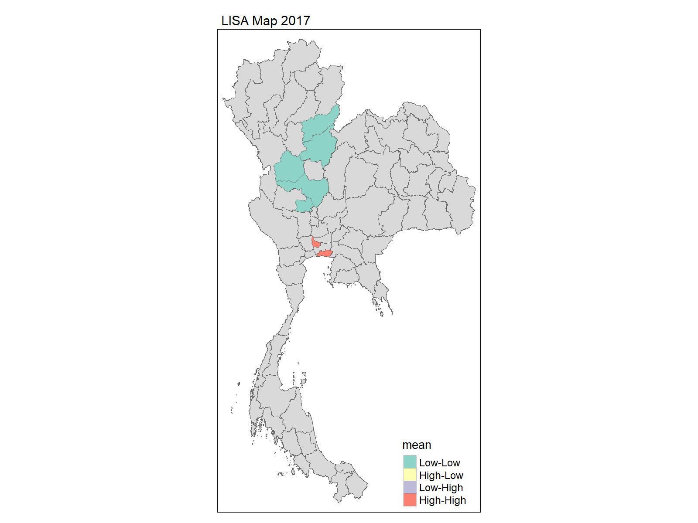
Summarize Local Moran’s I values
summarize_local_moran <- function(data) {
data %>%
summarise(
mean_local_moran = mean(ii, na.rm = TRUE),
min_local_moran = min(ii, na.rm = TRUE),
max_local_moran = max(ii, na.rm = TRUE),
sd_local_moran = sd(ii, na.rm = TRUE),
mean_p_value = mean(p_ii_sim, na.rm = TRUE),
min_p_value = min(p_ii_sim, na.rm = TRUE),
max_p_value = max(p_ii_sim, na.rm = TRUE),
count_high_high = sum(ii > 0 & p_ii_sim < 0.05),
count_low_low = sum(ii < 0 & p_ii_sim < 0.05),
count_high_low = sum(ii > 0 & p_ii_sim >= 0.05),
count_low_high = sum(ii < 0 & p_ii_sim >= 0.05)
)
}
# Apply the function to each year's dataset
local_moran_summary_2017 <- summarize_local_moran(lisa_2017)
local_moran_summary_2018 <- summarize_local_moran(lisa_2018)
local_moran_summary_2019 <- summarize_local_moran(lisa_2019)
local_moran_summary_2020 <- summarize_local_moran(lisa_2020)
local_moran_summary_2021 <- summarize_local_moran(lisa_2021)
local_moran_summary_2022 <- summarize_local_moran(lisa_2022)
# Combine summaries into a single data frame
local_moran_summary_all_years <- bind_rows(
mutate(local_moran_summary_2017, year = 2017),
mutate(local_moran_summary_2018, year = 2018),
mutate(local_moran_summary_2019, year = 2019),
mutate(local_moran_summary_2020, year = 2020),
mutate(local_moran_summary_2021, year = 2021),
mutate(local_moran_summary_2022, year = 2022)
)
write_rds(local_moran_summary_all_years, "data/rds/local_moran_summary_all_years.rds")local_moran_summary_all_years <- read_rds("data/rds/local_moran_summary_all_years.rds")
# Show all rows and columns
print(local_moran_summary_all_years, n = Inf, width = Inf)Simple feature collection with 6 features and 12 fields
Geometry type: MULTIPOLYGON
Dimension: XY
Bounding box: xmin: 97.34804 ymin: 5.610305 xmax: 105.6426 ymax: 20.46352
Geodetic CRS: Indian 1975
# A tibble: 6 × 13
mean_local_moran min_local_moran max_local_moran sd_local_moran mean_p_value
* <dbl> <dbl> <dbl> <dbl> <dbl>
1 0.133 -0.706 2.56 0.384 0.425
2 0.116 -0.854 3.40 0.447 0.442
3 0.155 -0.845 4.73 0.608 0.428
4 0.130 -0.768 2.48 0.493 0.455
5 0.199 -0.943 2.62 0.505 0.412
6 0.201 -1.37 2.14 0.540 0.454
min_p_value max_p_value count_high_high count_low_low count_high_low
* <dbl> <dbl> <int> <int> <int>
1 0.02 1 7 1 50
2 0.02 1 4 2 42
3 0.02 1 2 1 45
4 0.02 0.94 4 0 44
5 0.02 1 8 1 43
6 0.02 1 6 3 46
count_low_high
* <int>
1 18
2 28
3 28
4 28
5 24
6 21
geometry
* <MULTIPOLYGON [°]>
1 (((99.56788 11.08298, 99.56778 11.08326, 99.56765 11.08338, 99.56753 11.08346…
2 (((99.56788 11.08298, 99.56778 11.08326, 99.56765 11.08338, 99.56753 11.08346…
3 (((99.56788 11.08298, 99.56778 11.08326, 99.56765 11.08338, 99.56753 11.08346…
4 (((99.56788 11.08298, 99.56778 11.08326, 99.56765 11.08338, 99.56753 11.08346…
5 (((99.56788 11.08298, 99.56778 11.08326, 99.56765 11.08338, 99.56753 11.08346…
6 (((99.56788 11.08298, 99.56778 11.08326, 99.56765 11.08338, 99.56753 11.08346…
year
* <dbl>
1 2017
2 2018
3 2019
4 2020
5 2021
6 2022
Summary of Findings:
Mean Local Moran’s I Values:
- Ranged from 0.116 to 0.201, indicating increasing clustering of values over time.
Min/Max Local Moran’s I:
Minimum values: -1.37 to -0.943 (low-value clusters).
Maximum values: 2.14 to 4.73 (significant high-value clusters).
Standard Deviation:
- Varied from 0.384 to 0.608, indicating differences in clustering variability across years.
P-Values:
- Mean p-values consistent at 0.412 to 0.455, with a minimum p-value of 0.02, suggesting significant clustering.
Cluster Counts:
High-high clusters decreased from 7 in 2017 to 2 in 2019 but increased in later years.
Low-low clusters remained relatively low, peaking at 3 in 2022.
Yearly Trends:
- 2022 exhibited the highest mean Local Moran’s I value (0.201), indicating stronger clustering effects.
Hot Spot & Cold Spot Area Analysis (HCSA)
Computing local Gi* statistics
HCSA_2017 <- wm_q_2017 %>%
mutate(local_Gi = local_gstar_perm(
total_cases, nb, wts, nsim = 99),
.before = 1) %>%
unnest(local_Gi)Gi* VS P-Value
png("data/rds/gistar_vs_pvalue_map_2017.png", width = 1600, height = 1200)
gi_star_2017 <- tm_shape(HCSA_2017) +
tm_fill("gi_star") +
tm_borders(alpha = 0.5) +
tm_view(set.zoom.limits = c(6,8)) +
tm_layout(main.title = "Gi* of Total Cases in 2017",
main.title.size = 2.5,
legend.text.size = 2.0,
legend.title.size = 2.7)
gi_star_pvalue_2017 <- tm_shape(HCSA_2017) +
tm_fill("p_value",
breaks = c(0, 0.001, 0.01, 0.05, 1),
labels = c("0.001", "0.01", "0.05", "Not sig")) +
tm_borders(alpha = 0.5) +
tm_layout(main.title = "p-value of Gi* in 2017",
main.title.size = 2.5,
legend.text.size = 2.0,
legend.title.size = 2.7)
tmap_arrange(gi_star_2017, gi_star_pvalue_2017, ncol = 2)
# Close the graphic device
dev.off()image_read("data/rds/gistar_vs_pvalue_map_2017.png")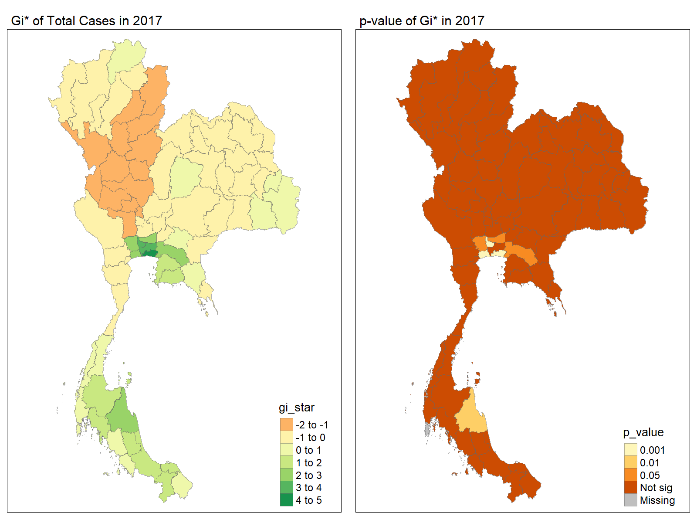
Putting together
png("data/rds/hcsa_map_2017.png", width = 1600, height = 1200)
HCSA_sig_2017 <- HCSA_2017 %>%
filter(p_sim < 0.05)
tmap_mode("plot")
tm_shape(HCSA_2017) +
tm_polygons() +
tm_borders(alpha = 0.5) +
tm_shape(HCSA_sig_2017) +
tm_fill("cluster") +
tm_borders(alpha = 0.4) +
tm_layout(main.title = "HCSA in 2017",
main.title.size = 2.5,
legend.text.size = 2.0,
legend.title.size = 2.7)
# Close the graphic device
dev.off()image_read("data/rds/hcsa_map_2017.png")Computing local Gi* statistics
HCSA_2018 <- wm_q_2018 %>%
mutate(local_Gi = local_gstar_perm(
total_cases, nb, wts, nsim = 99),
.before = 1) %>%
unnest(local_Gi)Visualising Hot Spot & Cold Spot (HCSA)
png("data/rds/gistar_vs_pvalue_map_2018.png", width = 1600, height = 1200)
gi_star_2018 <- tm_shape(HCSA_2018) +
tm_fill("gi_star") +
tm_borders(alpha = 0.5) +
tm_view(set.zoom.limits = c(6,8)) +
tm_layout(main.title = "Gi* of Total Cases in 2018",
main.title.size = 0.8)
gi_star_pvalue_2018 <- tm_shape(HCSA_2018) +
tm_fill("p_value",
breaks = c(0, 0.001, 0.01, 0.05, 1),
labels = c("0.001", "0.01", "0.05", "Not sig")) +
tm_borders(alpha = 0.5) +
tm_layout(main.title = "p-value of Gi* in 2018",
main.title.size = 0.8)
tmap_arrange(gi_star_2018, gi_star_pvalue_2018, ncol = 2)
# Close the graphic device
dev.off()image_read("data/rds/gistar_vs_pvalue_map_2018.png")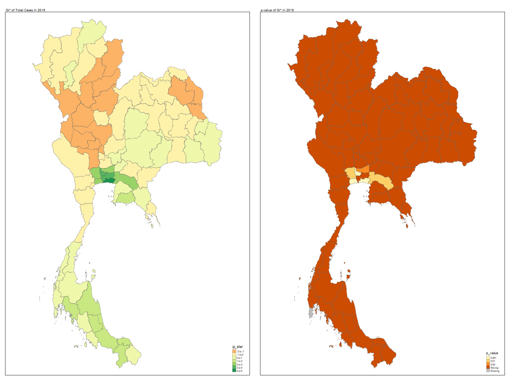
Putting together
png("data/rds/hcsa_map_2018.png", width = 1600, height = 1200)
HCSA_sig_2018 <- HCSA_2018 %>%
filter(p_sim < 0.05)
tmap_mode("plot")
tm_shape(HCSA_2018) +
tm_polygons() +
tm_borders(alpha = 0.5) +
tm_shape(HCSA_sig_2018) +
tm_fill("cluster") +
tm_borders(alpha = 0.4) +
tm_layout(main.title = "HCSA in 2018",
main.title.size = 2.5,
legend.text.size = 2.0,
legend.title.size = 2.7)
# Close the graphic device
dev.off()image_read("data/rds/hcsa_map_2018.png")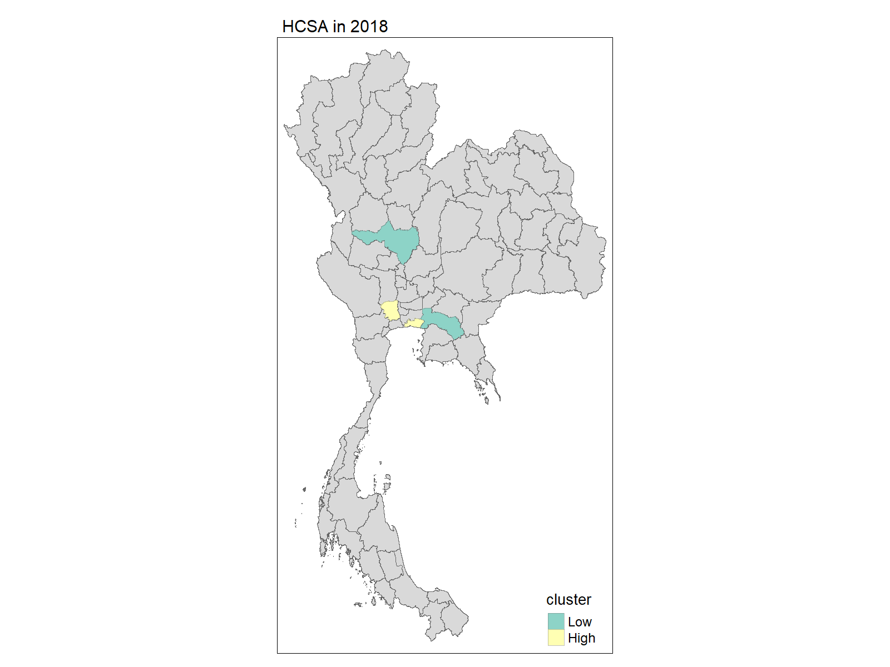
Computing local Gi* statistics
HCSA_2019 <- wm_q_2019 %>%
mutate(local_Gi = local_gstar_perm(
total_cases, nb, wts, nsim = 99),
.before = 1) %>%
unnest(local_Gi)Gi* VS P-Value
png("data/rds/gistar_vs_pvalue_map_2019.png", width = 1600, height = 1200)
gi_star_2019 <- tm_shape(HCSA_2019) +
tm_fill("gi_star") +
tm_borders(alpha = 0.5) +
tm_view(set.zoom.limits = c(6,8)) +
tm_layout(main.title = "Gi* of Total Cases in 2019",
main.title.size = 2.5,
legend.text.size = 2.0,
legend.title.size = 2.7)
gi_star_pvalue_2019 <- tm_shape(HCSA_2019) +
tm_fill("p_value",
breaks = c(0, 0.001, 0.01, 0.05, 1),
labels = c("0.001", "0.01", "0.05", "Not sig")) +
tm_borders(alpha = 0.5) +
tm_layout(main.title = "p-value of Gi* in 2019",
main.title.size = 2.5,
legend.text.size = 2.0,
legend.title.size = 2.7)
tmap_arrange(gi_star_2019, gi_star_pvalue_2019, ncol = 2)
# Close the graphic device
dev.off()image_read("data/rds/gistar_vs_pvalue_map_2019.png")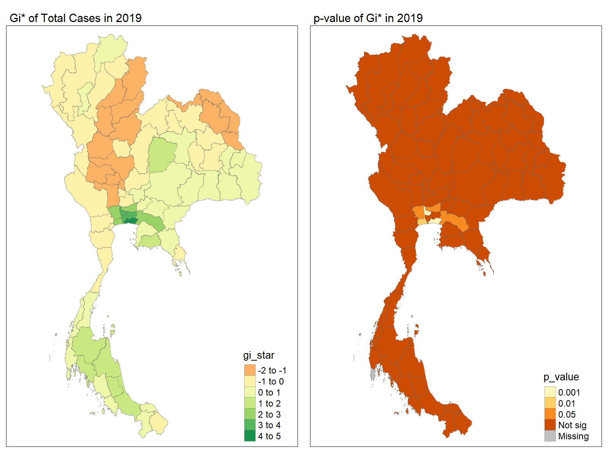
Putting together
png("data/rds/hcsa_map_2019.png", width = 1600, height = 1200)
HCSA_sig_2019 <- HCSA_2019 %>%
filter(p_sim < 0.05)
tmap_mode("plot")
tm_shape(HCSA_2019) +
tm_polygons() +
tm_borders(alpha = 0.5) +
tm_shape(HCSA_sig_2019) +
tm_fill("cluster") +
tm_borders(alpha = 0.4) +
tm_layout(main.title = "HCSA in 2019",
main.title.size = 2.5,
legend.text.size = 2.0,
legend.title.size = 2.7)
# Close the graphic device
dev.off()image_read("data/rds/hcsa_map_2019.png")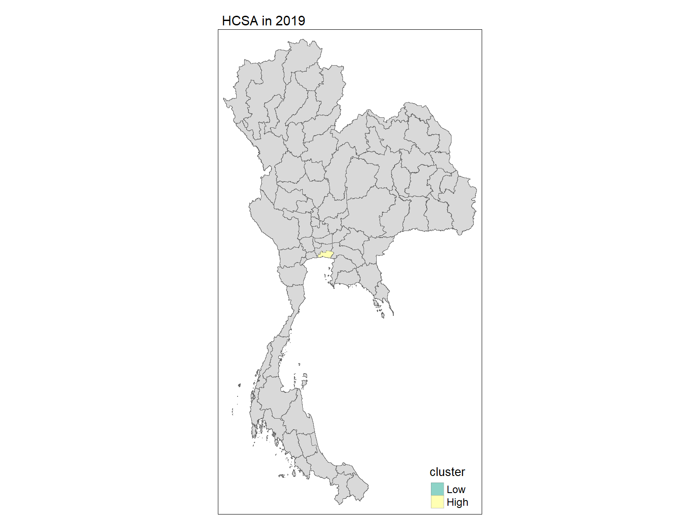
Computing local Gi* statistics
HCSA_2020 <- wm_q_2020 %>%
mutate(local_Gi = local_gstar_perm(
total_cases, nb, wts, nsim = 99),
.before = 1) %>%
unnest(local_Gi)Gi* VS P-Value
png("data/rds/gistar_vs_pvalue_map_2020.png", width = 1600, height = 1200)
gi_star_2020 <- tm_shape(HCSA_2020) +
tm_fill("gi_star") +
tm_borders(alpha = 0.5) +
tm_view(set.zoom.limits = c(6,8)) +
tm_layout(main.title = "Gi* of Total Cases in 2020",
main.title.size = 2.5,
legend.text.size = 2.0,
legend.title.size = 2.7)
gi_star_pvalue_2020 <- tm_shape(HCSA_2020) +
tm_fill("p_value",
breaks = c(0, 0.001, 0.01, 0.05, 1),
labels = c("0.001", "0.01", "0.05", "Not sig")) +
tm_borders(alpha = 0.5) +
tm_layout(main.title = "p-value of Gi* in 2020",
main.title.size = 2.5,
legend.text.size = 2.0,
legend.title.size = 2.7)
tmap_arrange(gi_star_2020, gi_star_pvalue_2020, ncol = 2)
# Close the graphic device
dev.off()image_read("data/rds/gistar_vs_pvalue_map_2020.png")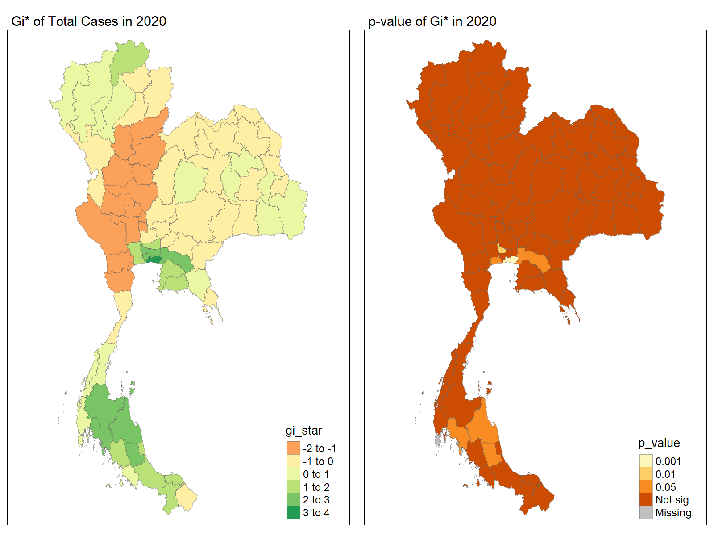
Putting together
png("data/rds/hcsa_map_2020.png", width = 1600, height = 1200)
HCSA_sig_2020 <- HCSA_2020 %>%
filter(p_sim < 0.05)
tmap_mode("plot")
tm_shape(HCSA_2020) +
tm_polygons() +
tm_borders(alpha = 0.5) +
tm_shape(HCSA_sig_2020) +
tm_fill("cluster") +
tm_borders(alpha = 0.4) +
tm_layout(main.title = "HCSA in 2020",
main.title.size = 2.5,
legend.text.size = 2.0,
legend.title.size = 2.7)
# Close the graphic device
dev.off()image_read("data/rds/hcsa_map_2020.png")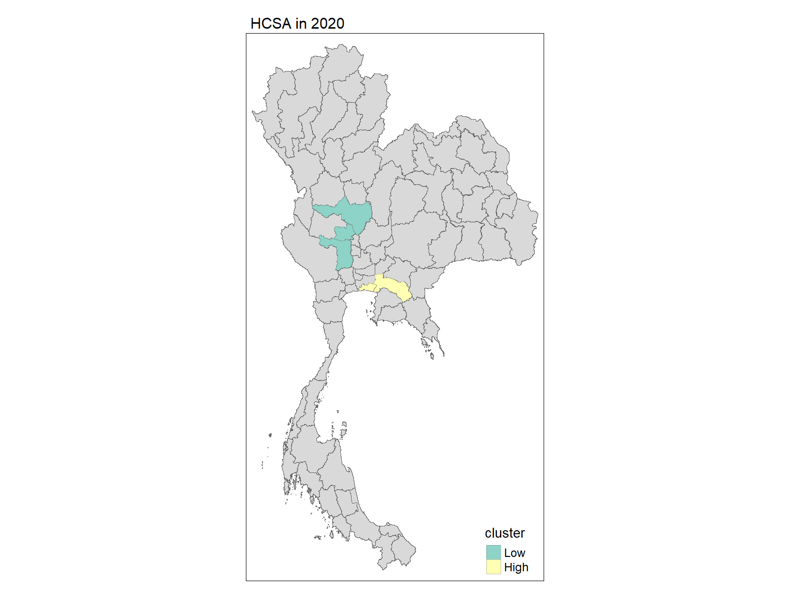
Computing local Gi* statistics
HCSA_2021 <- wm_q_2021 %>%
mutate(local_Gi = local_gstar_perm(
total_cases, nb, wts, nsim = 99),
.before = 1) %>%
unnest(local_Gi)Gi* VS P-Value
png("data/rds/gistar_vs_pvalue_map_2021.png", width = 1600, height = 1200)
gi_star_2021 <- tm_shape(HCSA_2021) +
tm_fill("gi_star") +
tm_borders(alpha = 0.5) +
tm_view(set.zoom.limits = c(6,8)) +
tm_layout(main.title = "Gi* of Total Cases in 2021",
main.title.size = 2.5,
legend.text.size = 2.0,
legend.title.size = 2.7)
gi_star_pvalue_2021 <- tm_shape(HCSA_2021) +
tm_fill("p_value",
breaks = c(0, 0.001, 0.01, 0.05, 1),
labels = c("0.001", "0.01", "0.05", "Not sig")) +
tm_borders(alpha = 0.5) +
tm_layout(main.title = "p-value of Gi* in 2021",
main.title.size = 2.5,
legend.text.size = 2.0,
legend.title.size = 2.7)
tmap_arrange(gi_star_2021, gi_star_pvalue_2021, ncol = 2)
# Close the graphic device
dev.off()image_read("data/rds/gistar_vs_pvalue_map_2021.png")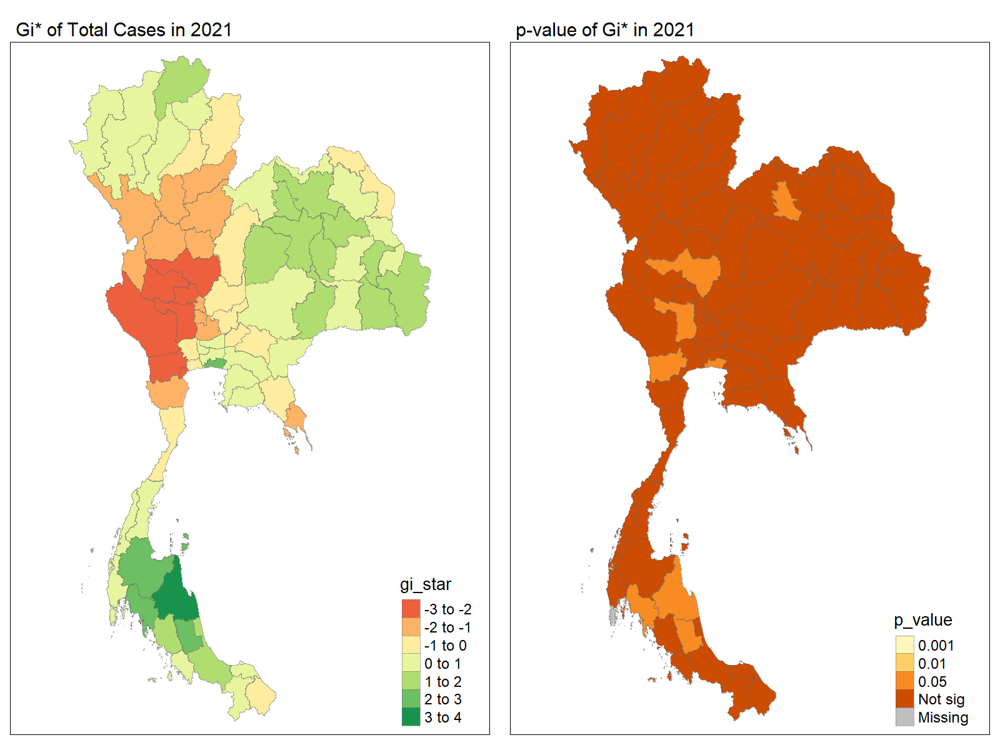
Putting together
png("data/rds/hcsa_map_2021.png", width = 1600, height = 1200)
HCSA_sig_2021 <- HCSA_2021 %>%
filter(p_sim < 0.05)
tmap_mode("plot")
tm_shape(HCSA_2021) +
tm_polygons() +
tm_borders(alpha = 0.5) +
tm_shape(HCSA_sig_2021) +
tm_fill("cluster") +
tm_borders(alpha = 0.4) +
tm_layout(main.title = "HCSA in 2021",
main.title.size = 2.5,
legend.text.size = 2.0,
legend.title.size = 2.7)
# Close the graphic device
dev.off()image_read("data/rds/hcsa_map_2021.png")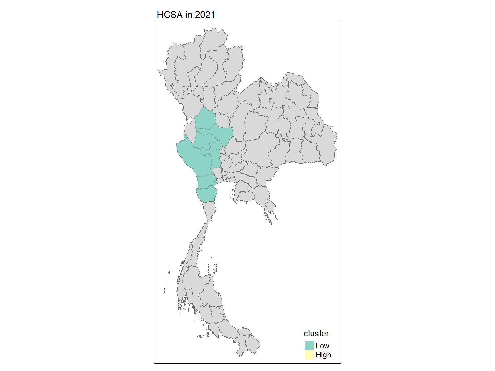
Computing local Gi* statistics
HCSA_2022 <- wm_q_2022 %>%
mutate(local_Gi = local_gstar_perm(
total_cases, nb, wts, nsim = 99),
.before = 1) %>%
unnest(local_Gi)Gi* VS P-Value
png("data/rds/gistar_vs_pvalue_map_2022.png", width = 1600, height = 1200)
gi_star_2022 <- tm_shape(HCSA_2022) +
tm_fill("gi_star") +
tm_borders(alpha = 0.5) +
tm_view(set.zoom.limits = c(6,8)) +
tm_layout(main.title = "Gi* of Total Cases in 2022",
main.title.size = 2.5,
legend.text.size = 2.0,
legend.title.size = 2.7)
gi_star_pvalue_2022 <- tm_shape(HCSA_2022) +
tm_fill("p_value",
breaks = c(0, 0.001, 0.01, 0.05, 1),
labels = c("0.001", "0.01", "0.05", "Not sig")) +
tm_borders(alpha = 0.5) +
tm_layout(main.title = "p-value of Gi* in 2022",
main.title.size = 2.5,
legend.text.size = 2.0,
legend.title.size = 2.7)
tmap_arrange(gi_star_2022, gi_star_pvalue_2022, ncol = 2)
# Close the graphic device
dev.off()image_read("data/rds/gistar_vs_pvalue_map_2022.png")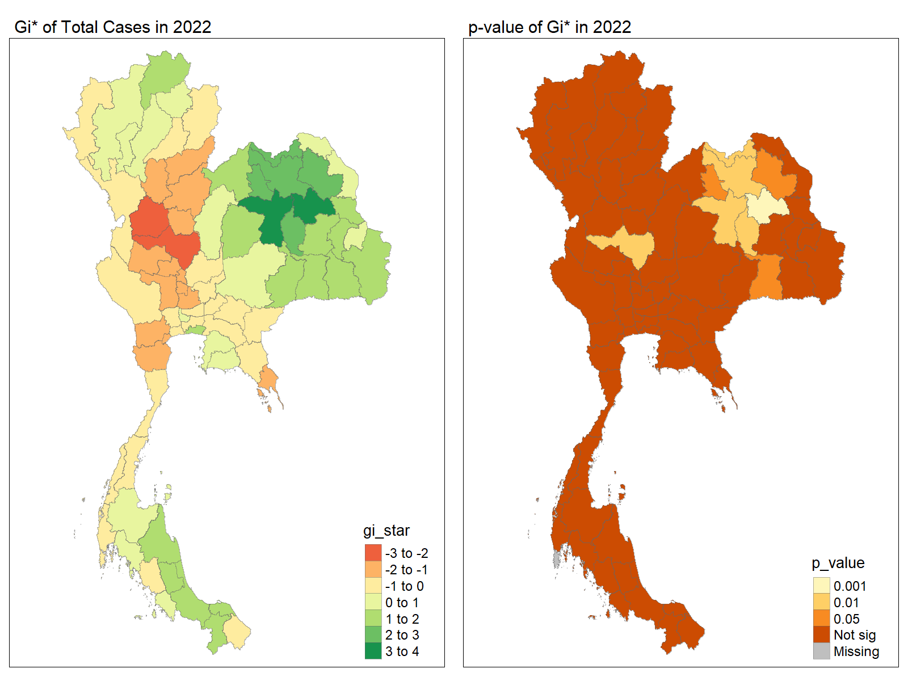
Putting together
png("data/rds/hcsa_map_2022.png", width = 1600, height = 1200)
HCSA_sig_2022 <- HCSA_2022 %>%
filter(p_sim < 0.05)
tmap_mode("plot")
tm_shape(HCSA_2022) +
tm_polygons() +
tm_borders(alpha = 0.5) +
tm_shape(HCSA_sig_2022) +
tm_fill("cluster") +
tm_borders(alpha = 0.4) +
tm_layout(main.title = "HCSA in 2022",
main.title.size = 2.5,
legend.text.size = 2.0,
legend.title.size = 2.7)
# Close the graphic device
dev.off()image_read("data/rds/hcsa_map_2022.png")
Summary of Gi* and P-Value Analysis
Gi Statistic (Hot Spot & Cold Spot Analysis)*
The Gi statistic* is calculated to identify clusters of high or low values of total cases in a given area.
It measures whether the number of cases in a location is significantly higher (hot spot) or lower (cold spot) than would be expected by random distribution.
P-Value of Gi Statistic*
The p-value determines the statistical significance of the observed clusters (hot or cold spots).
A low p-value (< 0.05) suggests that the cluster is unlikely to have occurred by chance, while a higher p-value indicates randomness in the observed pattern.
Purpose of Both Analyses
Gi of Total Cases* map visually displays the clustering of total cases.
P-Value of Gi* map helps verify whether the identified clusters are statistically significant or if they might be due to random variation.
These two analyses together provide a clear picture of where significant hot or cold spots are and how reliable these findings are. This ensures any conclusions drawn about spatial patterns are both visualized and statistically validated.
Visualising HCSA map across time span (2017-2022)
# Get a list of image files in the specified directory for HCSA maps
hcsa_map_files <- list.files("data/rds/", pattern = "hcsa_map_\\d{4}\\.png$", full.names = TRUE)
# Load saved images and combine them into an animated GIF
hcsa_images <- lapply(hcsa_map_files, image_read)
# Create an animation from the HCSA map images
hcsa_animation <- image_animate(image_join(hcsa_images), fps = 1)
# Save the animation as a GIF file
image_write(hcsa_animation, path = "data/rds/hcsa_animation.gif")image_read("data/rds/hcsa_animation.gif")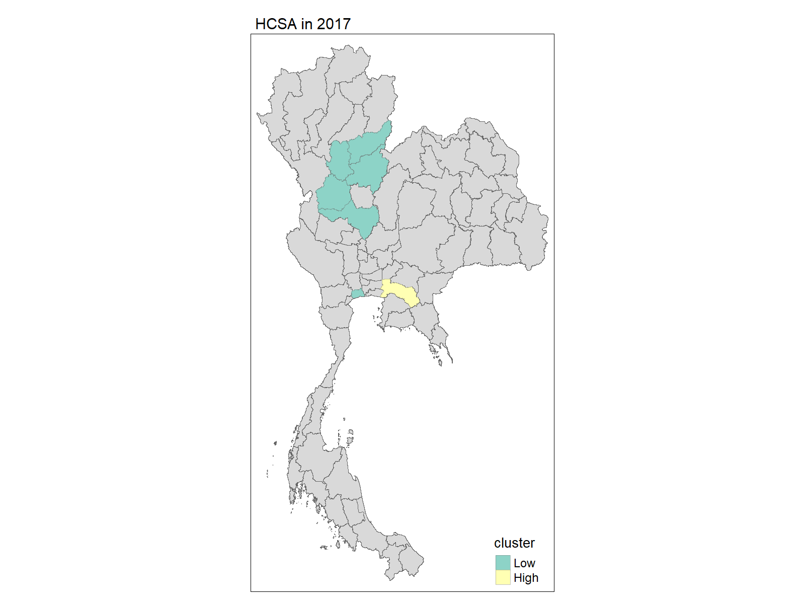
Summary of HCSA value
# Function to summarize HCSA values for a given year
summarize_hcsa <- function(data) {
data %>%
summarise(
mean_gi_star = mean(gi_star, na.rm = TRUE),
min_gi_star = min(gi_star, na.rm = TRUE),
max_gi_star = max(gi_star, na.rm = TRUE),
sd_gi_star = sd(gi_star, na.rm = TRUE),
mean_p_value = mean(p_value, na.rm = TRUE),
min_p_value = min(p_value, na.rm = TRUE),
max_p_value = max(p_value, na.rm = TRUE),
count_hot_spots = sum(gi_star > 0 & p_value < 0.05),
count_cold_spots = sum(gi_star < 0 & p_value < 0.05),
count_non_significant = sum(p_value >= 0.05),
geometry = st_union(geometry) # Combine geometries
)
}
# Summarizing HCSA for each year
hcsa_summary_2017 <- summarize_hcsa(HCSA_2017)
hcsa_summary_2018 <- summarize_hcsa(HCSA_2018)
hcsa_summary_2019 <- summarize_hcsa(HCSA_2019)
hcsa_summary_2020 <- summarize_hcsa(HCSA_2020)
hcsa_summary_2021 <- summarize_hcsa(HCSA_2021)
hcsa_summary_2022 <- summarize_hcsa(HCSA_2022)
hcsa_summary_all <- bind_rows(
mutate(hcsa_summary_2017, year = 2017),
mutate(hcsa_summary_2018, year = 2018),
mutate(hcsa_summary_2019, year = 2019),
mutate(hcsa_summary_2020, year = 2020),
mutate(hcsa_summary_2021, year = 2021),
mutate(hcsa_summary_2022, year = 2022)
)
write_rds(hcsa_summary_all, "data/rds/hcsa_summary_all.rds")hcsa_summary_all <- read_rds("data/rds/hcsa_summary_all.rds")
# Show all rows and columns
print(hcsa_summary_all, n = Inf, width = Inf)Simple feature collection with 6 features and 11 fields
Geometry type: MULTIPOLYGON
Dimension: XY
Bounding box: xmin: 97.34804 ymin: 5.610305 xmax: 105.6426 ymax: 20.46352
Geodetic CRS: Indian 1975
# A tibble: 6 × 12
mean_gi_star min_gi_star max_gi_star sd_gi_star mean_p_value min_p_value
* <dbl> <dbl> <dbl> <dbl> <dbl> <dbl>
1 0.0838 -1.71 4.67 1.29 0.500 7.95e-13
2 0.0948 -1.47 4.61 1.23 0.529 6.28e-11
3 0.0924 -1.62 4.44 1.23 0.473 3.69e- 7
4 0.103 -1.90 3.63 1.20 0.475 1.02e- 6
5 0.126 -2.41 3.06 1.30 0.393 7.44e- 3
6 0.199 -2.61 3.41 1.36 0.422 1.76e- 4
max_p_value count_hot_spots count_cold_spots count_non_significant
* <dbl> <int> <int> <int>
1 0.996 NA 0 NA
2 1.00 NA 0 NA
3 0.966 NA 0 NA
4 0.970 NA 0 NA
5 0.974 NA 3 NA
6 0.985 7 NA NA
geometry
* <MULTIPOLYGON [°]>
1 (((99.56788 11.08298, 99.56778 11.08326, 99.56765 11.08338, 99.56753 11.08346…
2 (((99.56788 11.08298, 99.56778 11.08326, 99.56765 11.08338, 99.56753 11.08346…
3 (((99.56788 11.08298, 99.56778 11.08326, 99.56765 11.08338, 99.56753 11.08346…
4 (((99.56788 11.08298, 99.56778 11.08326, 99.56765 11.08338, 99.56753 11.08346…
5 (((99.56788 11.08298, 99.56778 11.08326, 99.56765 11.08338, 99.56753 11.08346…
6 (((99.56788 11.08298, 99.56778 11.08326, 99.56765 11.08338, 99.56753 11.08346…
year
* <dbl>
1 2017
2 2018
3 2019
4 2020
5 2021
6 2022
Summary of Findings:
Mean Gi Values*:
- Increased from 0.0838 (2017) to 0.199 (2022), indicating more hot spots over time.
Gi Range*:
- Minimum values between -2.61 to -1.47 (cold spots) and maximum values from 3.06 to 4.67 (significant hot spots).
Standard Deviation:
- Stable variability in Gi* scores, ranging from 1.20 to 1.36.
P-Values:
Average p-values between 0.393 to 0.529, suggesting many Gi* values are not statistically significant.
Minimum p-values as low as 7.95e-13 indicate some significant hot spots.
Count of Hot Spots and Cold Spots:
- Up to 7 hot spots in 2022; several years reported NA for cold spots, indicating few or no significant cold spots.
Overall Trends:
- An overall trend of increasing hot spot concentration from 2017 to 2022, suggesting growing areas affected by the phenomena studied (e.g., drug abuse, crime).
Conclusion
The HCSA findings highlight a significant rise in hot spot areas over the years, which may require targeted interventions and further investigation into the factors influencing these changes.
lisa_animation <- image_read("data/rds/lisa_animation.gif")
hcsa_animation <- image_read("data/rds/hcsa_animation.gif")
# Ensure both animations have the same number of frames by replicating frames if needed
lisa_frames <- length(lisa_animation)
hcsa_frames <- length(hcsa_animation)
if (lisa_frames != hcsa_frames) {
if (lisa_frames > hcsa_frames) {
hcsa_animation <- image_cycle(hcsa_animation, lisa_frames)
} else {
lisa_animation <- image_cycle(lisa_animation, hcsa_frames)
}
}
# Convert each animation into a list of individual frames
lisa_frames_list <- as.list(lisa_animation)
hcsa_frames_list <- as.list(hcsa_animation)
# Resize each frame to ensure no margins and same height
lisa_frames_resized <- lapply(lisa_frames_list, function(frame) {
image_scale(frame, "800x")
})
hcsa_frames_resized <- lapply(hcsa_frames_list, function(frame) {
image_scale(frame, "800x")
})
# Combine corresponding frames side by side with no gaps
side_by_side_frames <- mapply(function(lisa_frame, hcsa_frame) {
# Use `image_append` with `stack = FALSE` for horizontal stacking
image_append(c(lisa_frame, hcsa_frame), stack = FALSE)
}, lisa_frames_resized, hcsa_frames_resized, SIMPLIFY = FALSE)
# Create a new animation from the combined frames
side_by_side_animation <- image_animate(image_join(side_by_side_frames), fps = 1)
# Save the final combined animation
image_write(side_by_side_animation, path = "data/rds/lisa_hcsa_side_by_side_animation.gif")
side_by_side_animation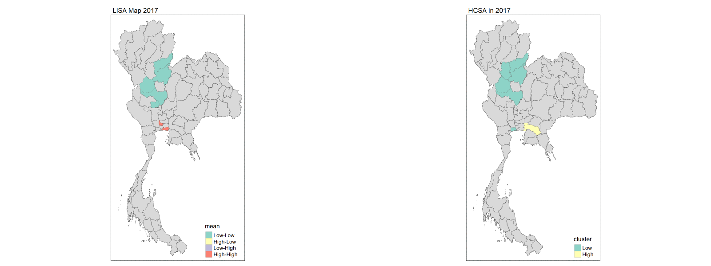
6.0 Mann-Kendall Test for Trend
This will assess the trend of drug abuse in each province over multiple years. [See if the abuse case is increasing, decreasing, or stable over time]
# Apply Mann-Kendall Test for each province
trend_results <- summary_stats %>%
group_by(province_name) %>%
summarise(
total_cases = list(total_cases),
trend = MannKendall(unlist(total_cases))$tau, # Tau value indicates trend direction
p_value = MannKendall(unlist(total_cases))$sl, # p-value for significance
)
# Classify trends based on the Mann-Kendall results
trend_results <- trend_results %>%
mutate(trend_status = case_when(
p_value < 0.05 & trend > 0 ~ "Increasing",
p_value < 0.05 & trend < 0 ~ "Decreasing",
p_value >= 0.05 ~ "Stable",
TRUE ~ "No sufficient data"
))
write_rds(trend_results, "data/rds/trend_results.rds")Provincial Trends
increasing_trends <- trend_results %>%
filter(trend_status == "Increasing") %>%
pull(province_name)
write_rds(increasing_trends, "data/rds/increasing_trends.rds")increasing_trends <- read_rds("data/rds/increasing_trends.rds")
# Check if increasing_trends is null or empty and set a default message
if (is.null(increasing_trends) || length(increasing_trends) == 0) {
result <- "NIL"
} else {
result <- paste(increasing_trends, collapse = ", ")
}
cat(result, "\n")Bueng Kan, Lampang, Mae Hong Son, Maha Sarakham, Roi Et, Sakon Nakhon, Udon Thani decreasing_trends <- trend_results %>%
filter(trend_status == "Decreasing") %>%
pull(province_name)
write_rds(decreasing_trends, "data/rds/decreasing_trends.rds")decreasing_trends <- read_rds("data/rds/decreasing_trends.rds")
# Check if decreasing_trends is null or empty and set a default message
if (is.null(decreasing_trends) || length(decreasing_trends) == 0) {
result <- "NIL"
} else {
result <- paste(decreasing_trends, collapse = ", ")
}
cat(result, "\n")NIL stable_trends <- trend_results %>%
filter(trend_status == "Stable") %>%
pull(province_name)
write_rds(stable_trends, "data/rds/stable_trends.rds")stable_trends <- read_rds("data/rds/stable_trends.rds")
# Check if stable_trends is null or empty and set a default message
if (is.null(stable_trends) || length(stable_trends) == 0) {
result <- "NIL"
} else {
result <- paste(stable_trends, collapse = ", ")
}
cat(result, "\n")Amnat Charoen, Ang Thong, Bangkok, Buri Ram, Chachoengsao, Chai Nat, Chaiyaphum, Chanthaburi, Chiang Mai, Chiang Rai, Chon Buri, Chumphon, Kalasin, Kamphaeng Phet, Kanchanaburi, Khon Kaen, Krabi, Lamphun, Loei, Lop Buri, Mukdahan, Nakhon Nayok, Nakhon Pathom, Nakhon Phanom, Nakhon Ratchasima, Nakhon Sawan, Nakhon Si Thammarat, Nan, Narathiwat, Nong Bua Lam Phu, Nong Khai, Nonthaburi, Pathum Thani, Pattani, Phangnga, Phatthalung, Phayao, Phetchabun, Phetchaburi, Phichit, Phitsanulok, Phra Nakhon Si Ayutthaya, Phrae, Phuket, Prachin Buri, Prachuap Khiri Khan, Ranong, Ratchaburi, Rayong, Sa Kaeo, Samut Prakan, Samut Sakhon, Samut Songkhram, Saraburi, Satun, Si Sa Ket, Sing Buri, Songkhla, Sukhothai, Suphan Buri, Surat Thani, Surin, Tak, Trang, Trat, Ubon Ratchathani, Uthai Thani, Uttaradit, Yala, Yasothon 7.0 Predicting near future trends
By forecasting, we can enhance our strategic planning, enabling proactive policy development, targeted interventions, and more effective resource allocation. This foresight allows decision-makers to anticipate challenges and respond promptly, ultimately reducing the impact of drug abuse on communities.
Forecast Future Values
library(forecast)
arima_forecasts <- list()
for (province in unique(drug_offenses_by_province$province_name)) {
province_data <- drug_offenses_by_province %>%
filter(province_name == province) %>%
arrange(year)
# Create time series object for case count
ts_data <- ts(province_data$case_count, start = min(province_data$year), frequency = 1)
# Fit ARIMA model
fit <- auto.arima(ts_data)
# Forecast for the next 5 years (2023 to 2027)
forecasted_values <- forecast(fit, h = 5)
# Store forecast results for each year
arima_forecasts[[province]] <- data.frame(
province_name = province,
year = 2023:2027,
predicted_cases = as.numeric(forecasted_values$mean)
)
}
# Combine forecast results for all provinces
future_predictions <- bind_rows(arima_forecasts)Hot/Cold Spot Classification
# Set thresholds for hot and cold spots
hot_spot_threshold <- quantile(drug_offenses_by_province$case_count, 0.75)
cold_spot_threshold <- quantile(drug_offenses_by_province$case_count, 0.25)
# Classify hot/cold spots based on predicted cases for each year
future_predictions <- future_predictions %>%
mutate(hot_cold_label = case_when(
predicted_cases > hot_spot_threshold ~ "Hot Spot",
predicted_cases < cold_spot_threshold ~ "Cold Spot",
TRUE ~ "Neutral"
))
print(future_predictions) province_name year predicted_cases hot_cold_label
1 Bangkok 2023 0.00000 Cold Spot
2 Bangkok 2024 0.00000 Cold Spot
3 Bangkok 2025 0.00000 Cold Spot
4 Bangkok 2026 0.00000 Cold Spot
5 Bangkok 2027 0.00000 Cold Spot
6 Chai Nat 2023 121.95164 Neutral
7 Chai Nat 2024 158.61225 Neutral
8 Chai Nat 2025 158.61225 Neutral
9 Chai Nat 2026 158.61225 Neutral
10 Chai Nat 2027 158.61225 Neutral
11 Nonthaburi 2023 445.56122 Neutral
12 Nonthaburi 2024 770.69906 Hot Spot
13 Nonthaburi 2025 971.02793 Hot Spot
14 Nonthaburi 2026 1085.64477 Hot Spot
15 Nonthaburi 2027 1044.22187 Hot Spot
16 Pathum Thani 2023 444.93144 Neutral
17 Pathum Thani 2024 745.38727 Hot Spot
18 Pathum Thani 2025 974.66979 Hot Spot
19 Pathum Thani 2026 1108.45103 Hot Spot
20 Pathum Thani 2027 1140.99565 Hot Spot
21 Phra Nakhon Si Ayutthaya 2023 433.96887 Neutral
22 Phra Nakhon Si Ayutthaya 2024 734.24699 Hot Spot
23 Phra Nakhon Si Ayutthaya 2025 934.85736 Hot Spot
24 Phra Nakhon Si Ayutthaya 2026 1025.35557 Hot Spot
25 Phra Nakhon Si Ayutthaya 2027 1019.24844 Hot Spot
26 Lop Buri 2023 73.42092 Neutral
27 Lop Buri 2024 -13.05389 Cold Spot
28 Lop Buri 2025 61.22385 Neutral
29 Lop Buri 2026 -14.51496 Cold Spot
30 Lop Buri 2027 30.78899 Neutral
31 Samut Prakan 2023 375.17550 Neutral
32 Samut Prakan 2024 541.24572 Neutral
33 Samut Prakan 2025 790.09928 Hot Spot
34 Samut Prakan 2026 905.81670 Hot Spot
35 Samut Prakan 2027 905.81670 Hot Spot
36 Saraburi 2023 156.28755 Neutral
37 Saraburi 2024 276.62499 Neutral
38 Saraburi 2025 410.66607 Neutral
39 Saraburi 2026 345.65633 Neutral
40 Saraburi 2027 323.05549 Neutral
41 Sing Buri 2023 77.82750 Neutral
42 Sing Buri 2024 91.55917 Neutral
43 Sing Buri 2025 117.63052 Neutral
44 Sing Buri 2026 120.66955 Neutral
45 Sing Buri 2027 129.50619 Neutral
46 Ang Thong 2023 94.64097 Neutral
47 Ang Thong 2024 102.49061 Neutral
48 Ang Thong 2025 141.69769 Neutral
49 Ang Thong 2026 141.45184 Neutral
50 Ang Thong 2027 158.01154 Neutral
51 Chanthaburi 2023 272.65223 Neutral
52 Chanthaburi 2024 326.70195 Neutral
53 Chanthaburi 2025 326.70195 Neutral
54 Chanthaburi 2026 326.70195 Neutral
55 Chanthaburi 2027 326.70195 Neutral
56 Chachoengsao 2023 405.88506 Neutral
57 Chachoengsao 2024 556.61584 Neutral
58 Chachoengsao 2025 556.61584 Neutral
59 Chachoengsao 2026 556.61584 Neutral
60 Chachoengsao 2027 556.61584 Neutral
61 Chon Buri 2023 941.06750 Hot Spot
62 Chon Buri 2024 1259.21802 Hot Spot
63 Chon Buri 2025 1259.21802 Hot Spot
64 Chon Buri 2026 1259.21802 Hot Spot
65 Chon Buri 2027 1259.21802 Hot Spot
66 Trat 2023 110.88123 Neutral
67 Trat 2024 139.82447 Neutral
68 Trat 2025 139.82447 Neutral
69 Trat 2026 139.82447 Neutral
70 Trat 2027 139.82447 Neutral
71 Nakhon Nayok 2023 226.80350 Neutral
72 Nakhon Nayok 2024 293.07455 Neutral
73 Nakhon Nayok 2025 293.07455 Neutral
74 Nakhon Nayok 2026 293.07455 Neutral
75 Nakhon Nayok 2027 293.07455 Neutral
76 Prachin Buri 2023 274.71493 Neutral
77 Prachin Buri 2024 374.77267 Neutral
78 Prachin Buri 2025 374.77267 Neutral
79 Prachin Buri 2026 374.77267 Neutral
80 Prachin Buri 2027 374.77267 Neutral
81 Rayong 2023 656.57920 Hot Spot
82 Rayong 2024 846.06450 Hot Spot
83 Rayong 2025 846.06450 Hot Spot
84 Rayong 2026 846.06450 Hot Spot
85 Rayong 2027 846.06450 Hot Spot
86 Sa Kaeo 2023 227.53179 Neutral
87 Sa Kaeo 2024 329.99615 Neutral
88 Sa Kaeo 2025 329.99615 Neutral
89 Sa Kaeo 2026 329.99615 Neutral
90 Sa Kaeo 2027 329.99615 Neutral
91 Chaiyaphum 2023 574.76971 Neutral
92 Chaiyaphum 2024 669.53688 Hot Spot
93 Chaiyaphum 2025 669.53688 Hot Spot
94 Chaiyaphum 2026 669.53688 Hot Spot
95 Chaiyaphum 2027 669.53688 Hot Spot
96 Nakhon Ratchasima 2023 792.99239 Hot Spot
97 Nakhon Ratchasima 2024 1013.51653 Hot Spot
98 Nakhon Ratchasima 2025 1013.51653 Hot Spot
99 Nakhon Ratchasima 2026 1013.51653 Hot Spot
100 Nakhon Ratchasima 2027 1013.51653 Hot Spot
101 Buri Ram 2023 455.31164 Neutral
102 Buri Ram 2024 595.14582 Neutral
103 Buri Ram 2025 595.14582 Neutral
104 Buri Ram 2026 595.14582 Neutral
105 Buri Ram 2027 595.14582 Neutral
106 Yasothon 2023 404.57270 Neutral
107 Yasothon 2024 442.14877 Neutral
108 Yasothon 2025 442.14877 Neutral
109 Yasothon 2026 442.14877 Neutral
110 Yasothon 2027 442.14877 Neutral
111 Si Sa Ket 2023 648.68659 Hot Spot
112 Si Sa Ket 2024 804.53952 Hot Spot
113 Si Sa Ket 2025 804.53952 Hot Spot
114 Si Sa Ket 2026 804.53952 Hot Spot
115 Si Sa Ket 2027 804.53952 Hot Spot
116 Surin 2023 340.39047 Neutral
117 Surin 2024 465.10676 Neutral
118 Surin 2025 465.10676 Neutral
119 Surin 2026 465.10676 Neutral
120 Surin 2027 465.10676 Neutral
121 Amnat Charoen 2023 309.37088 Neutral
122 Amnat Charoen 2024 368.68462 Neutral
123 Amnat Charoen 2025 368.68462 Neutral
124 Amnat Charoen 2026 368.68462 Neutral
125 Amnat Charoen 2027 368.68462 Neutral
126 Ubon Ratchathani 2023 963.58992 Hot Spot
127 Ubon Ratchathani 2024 1184.15202 Hot Spot
128 Ubon Ratchathani 2025 1184.15202 Hot Spot
129 Ubon Ratchathani 2026 1184.15202 Hot Spot
130 Ubon Ratchathani 2027 1184.15202 Hot Spot
131 Kalasin 2023 523.82305 Neutral
132 Kalasin 2024 617.81681 Neutral
133 Kalasin 2025 833.20013 Hot Spot
134 Kalasin 2026 820.92124 Hot Spot
135 Kalasin 2027 859.35567 Hot Spot
136 Khon Kaen 2023 705.88583 Hot Spot
137 Khon Kaen 2024 694.86365 Hot Spot
138 Khon Kaen 2025 910.47965 Hot Spot
139 Khon Kaen 2026 896.19125 Hot Spot
140 Khon Kaen 2027 962.60579 Hot Spot
141 Nakhon Phanom 2023 272.33236 Neutral
142 Nakhon Phanom 2024 346.37847 Neutral
143 Nakhon Phanom 2025 346.37847 Neutral
144 Nakhon Phanom 2026 346.37847 Neutral
145 Nakhon Phanom 2027 346.37847 Neutral
146 Bueng Kan 2023 340.66167 Neutral
147 Bueng Kan 2024 463.89491 Neutral
148 Bueng Kan 2025 581.50795 Neutral
149 Bueng Kan 2026 587.37437 Neutral
150 Bueng Kan 2027 588.34525 Neutral
151 Maha Sarakham 2023 322.76105 Neutral
152 Maha Sarakham 2024 541.66137 Neutral
153 Maha Sarakham 2025 702.74837 Hot Spot
154 Maha Sarakham 2026 792.21502 Hot Spot
155 Maha Sarakham 2027 809.35105 Hot Spot
156 Mukdahan 2023 347.46424 Neutral
157 Mukdahan 2024 381.15692 Neutral
158 Mukdahan 2025 381.15692 Neutral
159 Mukdahan 2026 381.15692 Neutral
160 Mukdahan 2027 381.15692 Neutral
161 Roi Et 2023 460.04874 Neutral
162 Roi Et 2024 406.74608 Neutral
163 Roi Et 2025 534.37317 Neutral
164 Roi Et 2026 513.27423 Neutral
165 Roi Et 2027 549.00865 Neutral
166 Loei 2023 372.22320 Neutral
167 Loei 2024 478.74224 Neutral
168 Loei 2025 653.88396 Hot Spot
169 Loei 2026 705.60846 Hot Spot
170 Loei 2027 720.21339 Hot Spot
171 Sakon Nakhon 2023 270.81527 Neutral
172 Sakon Nakhon 2024 261.27038 Neutral
173 Sakon Nakhon 2025 371.75413 Neutral
174 Sakon Nakhon 2026 360.67424 Neutral
175 Sakon Nakhon 2027 406.21679 Neutral
176 Nong Khai 2023 365.44722 Neutral
177 Nong Khai 2024 444.63562 Neutral
178 Nong Khai 2025 444.63562 Neutral
179 Nong Khai 2026 444.63562 Neutral
180 Nong Khai 2027 444.63562 Neutral
181 Nong Bua Lam Phu 2023 97.96556 Neutral
182 Nong Bua Lam Phu 2024 97.38559 Neutral
183 Nong Bua Lam Phu 2025 135.67981 Neutral
184 Nong Bua Lam Phu 2026 133.09628 Neutral
185 Nong Bua Lam Phu 2027 148.21035 Neutral
186 Udon Thani 2023 560.87453 Neutral
187 Udon Thani 2024 502.57923 Neutral
188 Udon Thani 2025 667.68487 Hot Spot
189 Udon Thani 2026 643.74121 Hot Spot
190 Udon Thani 2027 692.63295 Hot Spot
191 Chiang Rai 2023 552.88373 Neutral
192 Chiang Rai 2024 781.08315 Hot Spot
193 Chiang Rai 2025 781.08315 Hot Spot
194 Chiang Rai 2026 781.08315 Hot Spot
195 Chiang Rai 2027 781.08315 Hot Spot
196 Chiang Mai 2023 896.20515 Hot Spot
197 Chiang Mai 2024 1263.40637 Hot Spot
198 Chiang Mai 2025 1263.40637 Hot Spot
199 Chiang Mai 2026 1263.40637 Hot Spot
200 Chiang Mai 2027 1263.40637 Hot Spot
201 Nan 2023 296.41229 Neutral
202 Nan 2024 349.12970 Neutral
203 Nan 2025 349.12970 Neutral
204 Nan 2026 349.12970 Neutral
205 Nan 2027 349.12970 Neutral
206 Phayao 2023 285.56858 Neutral
207 Phayao 2024 339.30987 Neutral
208 Phayao 2025 339.30987 Neutral
209 Phayao 2026 339.30987 Neutral
210 Phayao 2027 339.30987 Neutral
211 Phrae 2023 380.78755 Neutral
212 Phrae 2024 390.83041 Neutral
213 Phrae 2025 390.83041 Neutral
214 Phrae 2026 390.83041 Neutral
215 Phrae 2027 390.83041 Neutral
216 Mae Hong Son 2023 49.99958 Neutral
217 Mae Hong Son 2024 57.75518 Neutral
218 Mae Hong Son 2025 74.56834 Neutral
219 Mae Hong Son 2026 75.80713 Neutral
220 Mae Hong Son 2027 81.58090 Neutral
221 Lampang 2023 453.32522 Neutral
222 Lampang 2024 521.25600 Neutral
223 Lampang 2025 521.25600 Neutral
224 Lampang 2026 521.25600 Neutral
225 Lampang 2027 521.25600 Neutral
226 Lamphun 2023 339.14296 Neutral
227 Lamphun 2024 379.74319 Neutral
228 Lamphun 2025 379.74319 Neutral
229 Lamphun 2026 379.74319 Neutral
230 Lamphun 2027 379.74319 Neutral
231 Kamphaeng Phet 2023 196.47710 Neutral
232 Kamphaeng Phet 2024 303.37231 Neutral
233 Kamphaeng Phet 2025 303.37231 Neutral
234 Kamphaeng Phet 2026 303.37231 Neutral
235 Kamphaeng Phet 2027 303.37231 Neutral
236 Tak 2023 161.86546 Neutral
237 Tak 2024 244.01662 Neutral
238 Tak 2025 244.01662 Neutral
239 Tak 2026 244.01662 Neutral
240 Tak 2027 244.01662 Neutral
241 Nakhon Sawan 2023 136.50688 Neutral
242 Nakhon Sawan 2024 175.40399 Neutral
243 Nakhon Sawan 2025 238.58111 Neutral
244 Nakhon Sawan 2026 251.45816 Neutral
245 Nakhon Sawan 2027 281.20155 Neutral
246 Phichit 2023 131.05482 Neutral
247 Phichit 2024 212.23742 Neutral
248 Phichit 2025 212.23742 Neutral
249 Phichit 2026 212.23742 Neutral
250 Phichit 2027 212.23742 Neutral
251 Phitsanulok 2023 155.65360 Neutral
252 Phitsanulok 2024 271.22834 Neutral
253 Phitsanulok 2025 303.93993 Neutral
254 Phitsanulok 2026 313.19843 Neutral
255 Phitsanulok 2027 315.81889 Neutral
256 Phetchabun 2023 221.68122 Neutral
257 Phetchabun 2024 291.15973 Neutral
258 Phetchabun 2025 357.68944 Neutral
259 Phetchabun 2026 374.81113 Neutral
260 Phetchabun 2027 395.08849 Neutral
261 Sukhothai 2023 241.34378 Neutral
262 Sukhothai 2024 300.84863 Neutral
263 Sukhothai 2025 344.53911 Neutral
264 Sukhothai 2026 366.19521 Neutral
265 Sukhothai 2027 363.11644 Neutral
266 Uttaradit 2023 118.22115 Neutral
267 Uttaradit 2024 209.21378 Neutral
268 Uttaradit 2025 248.11678 Neutral
269 Uttaradit 2026 264.74938 Neutral
270 Uttaradit 2027 271.86048 Neutral
271 Uthai Thani 2023 97.45097 Neutral
272 Uthai Thani 2024 128.06367 Neutral
273 Uthai Thani 2025 128.06367 Neutral
274 Uthai Thani 2026 128.06367 Neutral
275 Uthai Thani 2027 128.06367 Neutral
276 Kanchanaburi 2023 403.66211 Neutral
277 Kanchanaburi 2024 594.20084 Neutral
278 Kanchanaburi 2025 779.61462 Hot Spot
279 Kanchanaburi 2026 871.02073 Hot Spot
280 Kanchanaburi 2027 880.35025 Hot Spot
281 Nakhon Pathom 2023 326.31478 Neutral
282 Nakhon Pathom 2024 477.63712 Neutral
283 Nakhon Pathom 2025 477.63712 Neutral
284 Nakhon Pathom 2026 477.63712 Neutral
285 Nakhon Pathom 2027 477.63712 Neutral
286 Prachuap Khiri Khan 2023 267.83800 Neutral
287 Prachuap Khiri Khan 2024 474.80600 Neutral
288 Prachuap Khiri Khan 2025 607.37035 Neutral
289 Prachuap Khiri Khan 2026 665.46209 Hot Spot
290 Prachuap Khiri Khan 2027 659.21701 Hot Spot
291 Phetchaburi 2023 342.47703 Neutral
292 Phetchaburi 2024 568.68425 Neutral
293 Phetchaburi 2025 656.94812 Hot Spot
294 Phetchaburi 2026 665.69717 Hot Spot
295 Phetchaburi 2027 607.90321 Neutral
296 Ratchaburi 2023 460.03729 Neutral
297 Ratchaburi 2024 584.56236 Neutral
298 Ratchaburi 2025 584.56236 Neutral
299 Ratchaburi 2026 584.56236 Neutral
300 Ratchaburi 2027 584.56236 Neutral
301 Samut Songkhram 2023 76.30650 Neutral
302 Samut Songkhram 2024 120.26764 Neutral
303 Samut Songkhram 2025 147.13499 Neutral
304 Samut Songkhram 2026 153.43014 Neutral
305 Samut Songkhram 2027 150.57259 Neutral
306 Samut Sakhon 2023 81.87036 Neutral
307 Samut Sakhon 2024 158.44357 Neutral
308 Samut Sakhon 2025 273.54406 Neutral
309 Samut Sakhon 2026 316.86129 Neutral
310 Samut Sakhon 2027 330.63369 Neutral
311 Suphan Buri 2023 435.53079 Neutral
312 Suphan Buri 2024 645.01305 Hot Spot
313 Suphan Buri 2025 837.17651 Hot Spot
314 Suphan Buri 2026 939.71474 Hot Spot
315 Suphan Buri 2027 927.00394 Hot Spot
316 Krabi 2023 239.48163 Neutral
317 Krabi 2024 338.06991 Neutral
318 Krabi 2025 416.06659 Neutral
319 Krabi 2026 444.48590 Neutral
320 Krabi 2027 470.25255 Neutral
321 Chumphon 2023 266.37220 Neutral
322 Chumphon 2024 336.53238 Neutral
323 Chumphon 2025 449.78627 Neutral
324 Chumphon 2026 470.75982 Neutral
325 Chumphon 2027 519.73980 Neutral
326 Nakhon Si Thammarat 2023 873.57177 Hot Spot
327 Nakhon Si Thammarat 2024 1107.81056 Hot Spot
328 Nakhon Si Thammarat 2025 1395.35146 Hot Spot
329 Nakhon Si Thammarat 2026 1457.70530 Hot Spot
330 Nakhon Si Thammarat 2027 1553.31867 Hot Spot
331 Phangnga 2023 287.99713 Neutral
332 Phangnga 2024 493.81763 Neutral
333 Phangnga 2025 628.86052 Hot Spot
334 Phangnga 2026 695.65030 Hot Spot
335 Phangnga 2027 696.69975 Hot Spot
336 Phuket 2023 466.46431 Neutral
337 Phuket 2024 781.86130 Hot Spot
338 Phuket 2025 781.86130 Hot Spot
339 Phuket 2026 781.86130 Hot Spot
340 Phuket 2027 781.86130 Hot Spot
341 Ranong 2023 152.80096 Neutral
342 Ranong 2024 175.09006 Neutral
343 Ranong 2025 231.90182 Neutral
344 Ranong 2026 236.80697 Neutral
345 Ranong 2027 258.14327 Neutral
346 Surat Thani 2023 610.96897 Neutral
347 Surat Thani 2024 911.56069 Hot Spot
348 Surat Thani 2025 1110.68598 Hot Spot
349 Surat Thani 2026 1203.86861 Hot Spot
350 Surat Thani 2027 1269.21391 Hot Spot
351 Trang 2023 262.70161 Neutral
352 Trang 2024 311.49759 Neutral
353 Trang 2025 270.62038 Neutral
354 Trang 2026 378.39517 Neutral
355 Trang 2027 496.52719 Neutral
356 Narathiwat 2023 171.77751 Neutral
357 Narathiwat 2024 253.48050 Neutral
358 Narathiwat 2025 418.17847 Neutral
359 Narathiwat 2026 530.21478 Neutral
360 Narathiwat 2027 530.21478 Neutral
361 Pattani 2023 194.96926 Neutral
362 Pattani 2024 298.61454 Neutral
363 Pattani 2025 446.29248 Neutral
364 Pattani 2026 529.67746 Neutral
365 Pattani 2027 529.67746 Neutral
366 Phatthalung 2023 118.68252 Neutral
367 Phatthalung 2024 195.62916 Neutral
368 Phatthalung 2025 245.51676 Neutral
369 Phatthalung 2026 277.86090 Neutral
370 Phatthalung 2027 298.83090 Neutral
371 Yala 2023 249.57731 Neutral
372 Yala 2024 413.50934 Neutral
373 Yala 2025 413.50934 Neutral
374 Yala 2026 413.50934 Neutral
375 Yala 2027 413.50934 Neutral
376 Songkhla 2023 487.34873 Neutral
377 Songkhla 2024 806.72011 Hot Spot
378 Songkhla 2025 1016.01187 Hot Spot
379 Songkhla 2026 1153.16581 Hot Spot
380 Songkhla 2027 1243.04609 Hot Spot
381 Satun 2023 469.36891 Neutral
382 Satun 2024 729.24674 Hot Spot
383 Satun 2025 873.52819 Hot Spot
384 Satun 2026 955.64227 Hot Spot
385 Satun 2027 894.15579 Hot SpotVisualization of Predictions
library(tmap)
# Merge predictions with spatial data
future_spatial <- province_boundaries %>%
left_join(future_predictions, by = "province_name")
tm_shape(future_spatial) +
tm_polygons("hot_cold_label", palette = c("blue", "red", "gray"),
title = "Predicted Hot/Cold Spots (2023-2027)") +
tm_borders() +
tm_layout(title = "Predicted Drug Abuse Hot/Cold Spots in Thailand (2023-2027)")Warning: One tm layer group has duplicated layer types, which are omitted. To
draw multiple layers of the same type, use multiple layer groups (i.e. specify
tm_shape prior to each of them).
Note
ARIMA (AutoRegressive Integrated Moving Average) model is used for our time series forecasting.
Also it offers,
Flexibility: in various time series patterns, suitable for non-stationary data.
Automatic Parameter Selection (
auto.arima): simplifies model fitting by automatically selecting optimal parameters.Robustness: in capturing fluctuations in historical data.